appiversity User Guide
Welcome to the appiversity guide—your complete resource for navigating and using the platform. You’ll find everything you need to know about signing up, signing in, and managing departments, people, and positions. you’ll also get step-by-step guidance on working with workflows, the catalog, schedules, student services, and registration. Whether you’re setting up your institution’s data, handling day-to-day operations, or integrating with other systems, this guide will walk you through the process. If you need additional help - support@appiversity.com
- Creating an Institution - Get started by creating an account for your institution
- Academic Years - Learn how appiversity manages all of your data across academic years.
- Users - Learn about the different kinds of user accounts, and how they will interact with appiversity
- Signing in - Learn how we security log you in, using a combinations of passwords, OTL, and SSO
- People & Departments - Manage, list, publish your department listings, the faculty and staff who make them up, and the roles they play.
- Workflows - Stop emailing forms and editing PDFs, and start creating auditable approval chains that fit any workflow.
- Catalog - Create your degree programs, course catalogs, and all your requirements while making them easy for students and the public to search and reference.
- Bridge and Publish - Integrate with other systems, publish your data so you can advertise your programs and make your people accessible to the community.
- Account Management - Learn about how you can manage your account, upgrade, downgrade, and get more help!
Creating an institution
Every appiversity account is connected to an institution of higher education. To get started, enter your email address with a .edu domain. We’ll check to see if your institution is already part of appiversity, and get you moving in the right direction either way.
In this section, we’ll cover
- Accessing demo institutions before you start - you can try a lot of appiversity without signing up at all!
- Signing up for a new account in minutes - get started with your kickstart account!
- Verification - the verification process makes sure only people authorized to make things public for your institution can do so!
Before you sign up
If you are interested in what appiversity can help you with, you can check out the demo accounts before you sign up. Demo accounts for Barnett College, Winston University and Pembroke University are setup with lots of data that you can access.
Demo accounts have:
- People / Departments
- Roles / Positions / Assignments
- Academic degrees, programs, attainments, and courses
- Public and internal workflows
For the most part, demo accounts won’t let you create, edit, or delete any data, but they give you a good idea of what appiversity looks like when you have an account. There are in-app guides and hints to get you familiar with the application.
There are few areas where, if you enter your email address, you can create some data - particularly by accessing some of the public workflows.
If you are looking to just get an idea of what we do, the demo account logins are the perfect way to start.
Get the full demo!
If you want to see everyting in action, reach out to use on the demo page. Just provide your contact information and we will get back to you right away to schedule a 30min video call, where we can show you all the features - including things not available on the public demo accounts, like full editing, Reqit catalog requirements entries, and more.
Your demo will be tailored to your institution, so please let us know what you are most interested in!
Signing up is easy
Finally, signing up is easy, and risk free. Our KickStart package is free, and free forever. You can sign up with your .edu email address and get started in under two minutes. No sales pitch - just jump right in!
Once you sign up and create an account, you can get to work. When you are ready, you can get your account verified (for free) so we know you represent your institution - and you can start publishing publically - department and people listings, catalogs, public workflows, and more.
Check out the next section for what you need when signing up
Signing up
You can create an account in under 2 minutes. No sales pitch, required demo, or implementation. We are always here to help you learn, and will always help you build your data - but we pride ourselves on appiversity easy to learn, easy to use, and easy to leverage. Unlike some of our competitors, we have confidence in our app to put it’s best foot forward when people try it!
Creating an account
When you start, you’ll be on the kickstart plan, which give you full and complete access to Departments and Workflow, and most of our Catalog features.
Creating an account first asks you for an email address with a .edu ending. This will be the email address you use for appiversity. One of three things happens after this:
-
IF you are the first person from your .edu institution to sign up: Then your account is created right away. We ask you for your name, and some simple information about your institution (it’s name, address). You’ll create a new password, and off you go!
-
IF someone has already created an account with your .edu institution: Here’s where the verification processes is important. Anyone can create an account, so if the other account with your institution hasn’t been verified, you will be given the option to simple create another one. We collect all the same information from you, and you are ready to go. Unverified accounts have a limited number of users, and can’t make anything public - so while it doesn’t make sense to have multiple accounts for your institution, we won’t prevent you from doing so. Sometimes people create accounts to try things out, and then later someone else does the same thing - no problem.
If there’s already a verified account for the .edu institution you entered, then you will be asked to contact the account holder. Only one account can exist for a verified institution.
Creating an account will require you to prove you own the email address you have provided. Before moving forward, you’ll need to enter the activation code we send to the provided email address.
Once you sign up, you’ll be given a few optional next steps - which includes
- Verification - a free process which verifies you can speak for the institution, and unlocks all the features of the kickstart plan for your account. This process also prevents any more accounts being from being created for your institution.
- Creating some default roles - most institution have some common roles (ie faculty), you’ll be able to create them in one click to get started quickly.
- Guide pointers to help get you moving.
Verification
When you sign up for appiversity, you’ll have access to all of the features on the Kickstart plan level. This includes the full set of Department features, full access to Workflows, and the basic features of Catalog, Scheduler, and Records.
Some of those features let you publish listings to the web - whether it’s faculty listings and profiles, public-facing workflows, or department contact information.
We’ve created a streamlined onboarding process for you, signing up is quick and easy. The only problem with that is that we don’t want someone to claim your institution on appiversity and publish inaccurate data by creating an account. For example, a student with your institution’s domain in their email address might try to create an account!
That’s where verification comes in. While an account is unverified, we don’t let that account publish any data in a way that it is accessible to the general public. That’s a big limitation, but it’s necessary to protect your institution.
Account verification is FREE
We just need contact info for someone authorized to represent your institution. The process is simple, and it helps make sure your institution is represented accurately. You can get verified at any time, but until your account is verified, you won’t be able to publish content or have more than a few users.
If your account is unverified, all users will have a “Verify this account” button at the bottom of their screen.

Clicking on this button will bring you to a form, which lets you start the verification process.
How do we verify your account?
We’ll ask for contact information of someone we can verify can speak for your institution. This can be someone in an academic leadership position - like a Vice Provost, Provost, President, or Chancellor. It can be a C-level executive, like a CIO/CTO, or the leader of a core academic unit, like the Registrar.
We want to verify that this person’s contact information is valid, and so we need a web address of a page that lists this person’s contact information on your institution’s website. This can be a directory page, a contact page, or a page that lists the institution’s leadership.
We can also use generic email addresses (provost@collge.edu, for example), as long as that email address is listed on the public web address you provide.
We will reach out to the contact you’ve provided. Once we’ve been able to verify that your account with us is indeed on behalf of your institution (it’s as simple as a quick email reply usually!), we’ll remove the verification prompt on your account and you’ll be able to start taking advantage of the Kickstart plan full.
What happens if someone creates an “unauthorized” account?
It’s possible an employee, alumni, or even a student can create an account with us. All they need is a valid email address under your email domain. That might sounds a little scary, but it’s not as bad as it sounds.
An unverified account can create department listings, faculty listings, workflows, and build catalog data - but that data can’t be access by anyone without logging into appiversity, under the very same institutional account.
Unverified accounts have a strict (and low) limit of users. Combined with the inability to publish anything, an unverified account is really just a private sandbox.
When you sign up for an account, if someone from the same email domain (your institution) has already created an unverified account, you’ll be notified - but you will be able to create your own unverified account too.
Once an account for an institution is verified, then no additional accounts can be created. In addition, any additional unverified accounts under the same institution are disabled.
All told, the verification process protects your institution, and also allows you to get started quickly. Don’t hesitate to verify, it’s quick and painless!
Managing Academic Years
Your account always has an active academic year, and other inactive years.
Within appiversity, you manage lots of data - and almost all of it is tied to specific academic years. This is pretty intuitive when you think about course catalog information - courses, degrees, requirements. Clearly, in order to manage the catalog you need the concept of current academic year, and you also need to be able to retain copies of all the data from previous academic years. Moreover, it’s likely that throughout the year you will work on updating data for future academic years. The catalog systems must have a way to manage multiple years of data.
appiversity Catalog of course does this, and allows you to rollover one AY to another. It also uses stems - a concept of linking things across years. This way, there is a built in connection between a the 2024 version of “Intro to Pottery” and the 2025 version - the system understand they are the same course, but with potentially different details - based on the AY.
Critically, appiversity doesn’t use academic years, rollover, and stemming just for catalog data - these concepts are part of nearly everything. Faculty and Staff data (and public profiles) can be versioned by year. Same with departments, and the people and the positions they fill within them. Workflow (approval forms) are tied to years, so you can change them over time and not lose track of old ones. Schedule builder uses different listings of timeblocks, classrooms, course and section attributes based on which year you are building. appiversity allows you to manage all of your academic data versioned by academic year.
Explore Academic Year Documentation
- Active Academic Year - learn how to set the current academic year, and what that means for other data and links in the system.
- Rolling over Academic Years - you don’t start from scratch every year, each year is mostly the same as last year - but with some changes. Rollover let’s you move content to new academic years, while preserving some connection between data in different years.
- Stemming - stems are how we let you navigate years. When you are viewing a course in 2026, you can jump to the 2027 version seamlessly. Stemming happen automatically during rollover.
Active Academic Year
Your account always has an active academic year. This is a global configuration across the entire application, and it is important that you understand how it relates to various features.
Setting the Active Academic Year
The academic year is accessible from the AY page - which is linked from the home screen.

In order to access the Academic Years page, you need the rollover privilege. This privilege allows you to change the academic year and rollover data from one year to another. You should allow a limited set of people to have this privilege, as they can make application-wide changes that can affect public facing content as well as internal. Although most actions are reversible, your institution will want to coordinate the timing of changing academic years and performing rollovers.
Form the academic year page, you can change the current year by entering it into the input box as shown.

This action is completely reversible and non-destructive.
Viewing active and other years
Whenever you are using appiversity, you are implicitly viewing (and editing) data associated with a current year. It’s always clear which year you are working with - it’s at the top right of your screen.

At any time, you can change the year you are viewing, by changing the value and clicking the → button.
It’s usually pretty important to know that you are viewing a year that is not the current AY. It’s always clear when this is the case, it’s shown at the top of the screen. You can click the text to switch into the current year at any time.

Important - When you change the AY you are viewing while you are viewing a page tied to an AY, appiversity will do it’s best to help you navigate. For example, if you are viewing a course in the 2025 catalog, and change the year to 2026, if the course you are viewing exists in the 2026 catalog appiversity will automatically switch you to the 2026 version. If the course doesn’t exist in 2026, you will be shown a list of years the course does exist in.
Below, we are looking at a course in the 2024 catalog.

When we change the AY to 2023, we see that the course actually isn’t present in the 2023 catalog. We’re shown a list of years to choose from instead.

If the course had existed in 2023, we would have been brought directly to that version.
All of this is accomplished through stemming, and for the most part it “just works” - you won’t need to think about it as long as you are using rollover to create each year.
Exceptions to AY data
There are some exceptions to the rule that everything is tied to academic years. Anything found in Settings & defaults is global. This includes things like label preferences, and application configuration. The settings in this area aren’t date based, and wouldn’t make sense to behave one way for one year, and another way for another.
Another exception is Users. Users are people who create, edit, and manage the data of the institution. They have full accounts on appiversity, with a set of privileges to control who can change what. These accounts are not AY-based.
Note - there’s a big difference between users and People. People are the people who work at your institution - faculty, staff, etc. They will use appiversity too - but they use it very differently. Moreover, they are data, too. Faculty profiles, and the departments they reside in - for example - is academic data, and is tied to academic years. People are tied to AY (they are rolled over, and stemmed), Users are not.
Impact of changing AYs
Data for the active year, and for any year after the active year, is considered editable. Data for years before the active year is considered archived. That said, in most cases, archived (past) year’s data is still editable, but it is discouraged. In some situation, archived data is locked - such as public profiles of faculty from past years.
Below are some other implications of changing the AY.
Workflows
Workflows are tied to academic years, like most things in appiversity. They can be rolled to other academic years, and they are stemmed.
Workflows are frequently published via links, and emailed. It’s common for people to bookmark them as well. It is common for people to attempt to access (initiate) workflows from previous academic years, because the links are unique for each year. When this happens, the user will be prevented from submitting the workflow, and will be advised to visit the workflow found in the current academic year. They will also be advised to change the bookmark they are using.
Note, workflows submitted in other academic years are always accessible, and can continue to be worked on. For example, consider the following situation:
- A faculty member submits a travel request in June 2025, which is part of your institution’s AY 2025. The workflow is assigned a tracking ID, and the faculty member is emailed a link to view it’s progress.
- The approver (maybe the Dean) is of course away on vacation, and doesn’t take a look at the workflow until mid-July 2025. July 1 is your institution pivot date, and you have changed the current AY to 2026.
- The workflow is still active, and the dean can still take action on it. If approved, all is well. If revisions are requested, the faculty member can still resubmit the changes. The fact that the workflow is from 2025, and the current AY is 2026, is irrelevant.
The above scenario is different than if in July 2025, the faculty member attempts to start a workflow that is from AY 2025. In that case, they are advised that they must instead work with the AY 2026 version of the workflow (if it exists). If it does not exist, the workflow is unable to be started.
Rollover
At some point every year, you create a new course catalog, for the upcoming academic year. You don’t start from a clean slate, you start with the programs and courses you already have. You apply changes that have already been agreed upon by various committee, and there’s probably a period of time before the catalog goes live that more changes can be made.
appiversity calls this transition to a new year a rollover, but we don’t limit it to course catalog data. In appiversity, you rollover everything. Having separate version for each academic year for departments, people, roles, positions, courses, timeblocks, classrooms, and everything else makes changes less destructive - reports can still be run on previous years, and you can see how things change. We make the versioning easy for you to manage through our ./stem concept, in this section we discuss the rollover which creates the next version of your institutional data for the upcoming year.
When to Rollover
First, know that you don’t need to pick one time. Think of “rollover” as an import process - you are importing one year’s data into another year’s data. You can roll data from one (source) year into multiple (target) years, you can roll data from two source years into on target year. You can also roll the same source year into a target year multiple times (maybe if you make changes in the source year). Rollover is safe and non-destructive. You won’t accidentally overwrite data.
For most institutions, it make sense to rollover the current [./active-ay](academic year) into the next year at a time when (1) no more changes are happening in the active year, and (2) you start to have a backlog of changes ready to be applied. For most institutions, this makes sense at different times for different types of data:
-
Departments, people, and positions sometimes change during the academic year. Things happen, people change roles. It usually makes sense to rollover department, people, and positions late in the cycle - maybe pretty close to the beginning of the next academic year. If you rollover this data earlier, you might be put in a situation where changes need to be applied to both the current year, and the next. It’s not hard to do - in fact, in many cases appiversity will ask you if you want to do this when making a change in the current year, and the same department, person, or position already exists in a future year. It’s up to you.
-
Catalog data, and other things related to course scheduling tend to be more fixed within a given academic year. If your institution locks the course catalog once a year, really any time after that would make sense to roll the next year’s version - so people can begin actively working on making changes for the next year. Just like with departments, if you do need to make a change to the active year, you can - and appiversity will usually ask you if that change should be applied forward to future years.
**The most important thing to remember: To be used most effectively, rollover should be thought of as something you do once or twice a year, when most things in the source year are going to go unchanged. The time you roll data doesn’t need to be the same - you may decide to roll catalog data early in the cycle, and roll department data late. The rollover is nondestructive, and you remain in control of what get’s rolled and what doesn’t - every time!
How to Rollover
Head over the the academic year page:
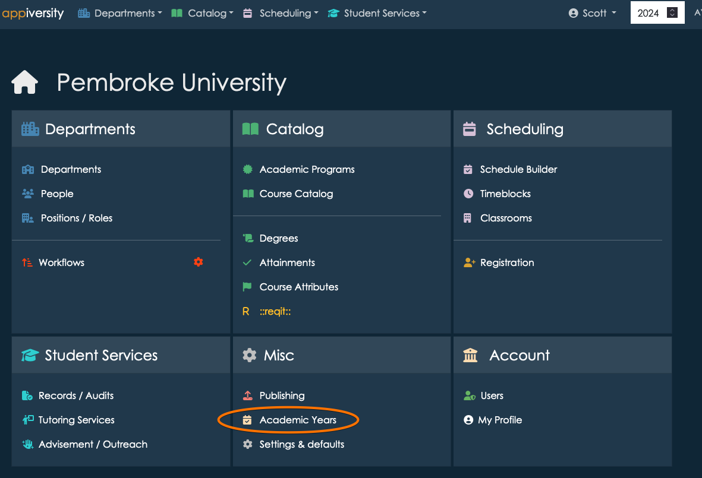
If you scroll down, you’ll find the area where you can start a rollover. The first step is to select a source year - this is the year you are taking the data from.
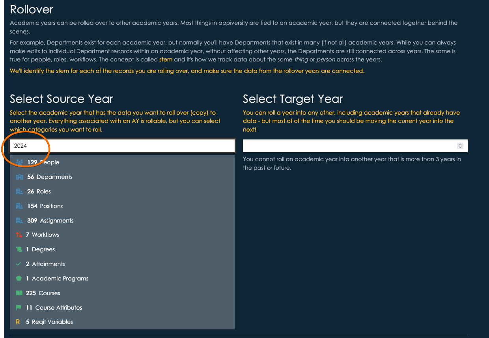
You’ll see a confirmation of what kinds of data you have. The next step is to pick the target year, the year you want the data to be copied into. This might be a completely new academic year, or it can be an existing year. To avoid error, we limit you to picking a year within a three year window of the source year. Anything more than this probably doesn’t make sense.
If you have data already in the target year, it will be listed. Here’s a hypothetical example of moving 2025 data into 2027, which has a few data items already in it.

At this stem, you aren’t moving any data - so it’s perfectly safe to choose a target year that already has data. In the next step, you’ll be able to review the data and decide exactly what to move, and what to skip.
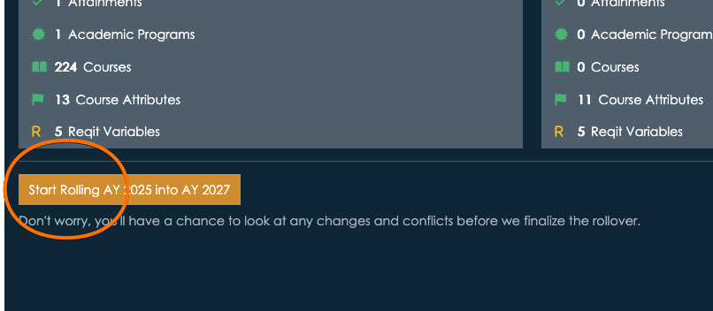
After clicking the start button, you’ll be taken to a (potentially) long screen, detailing every item that can be rolled. This page shows you clearly which years you are rolling, and it breaks the items up into categories. The categories, and their orders, are driven by their dependencies. For example, if you are importing an assignment, the person, role, and department need to be imported too.
For each category, you can select or unselect the entire group, or you can select/unselect individual items. By default, all items that we are do not see in the target year will be selected for rollover. If we do find duplicates, we will prevent you from rolling that data. You will not accidentally overwrite data if it was detected as a duplicate!
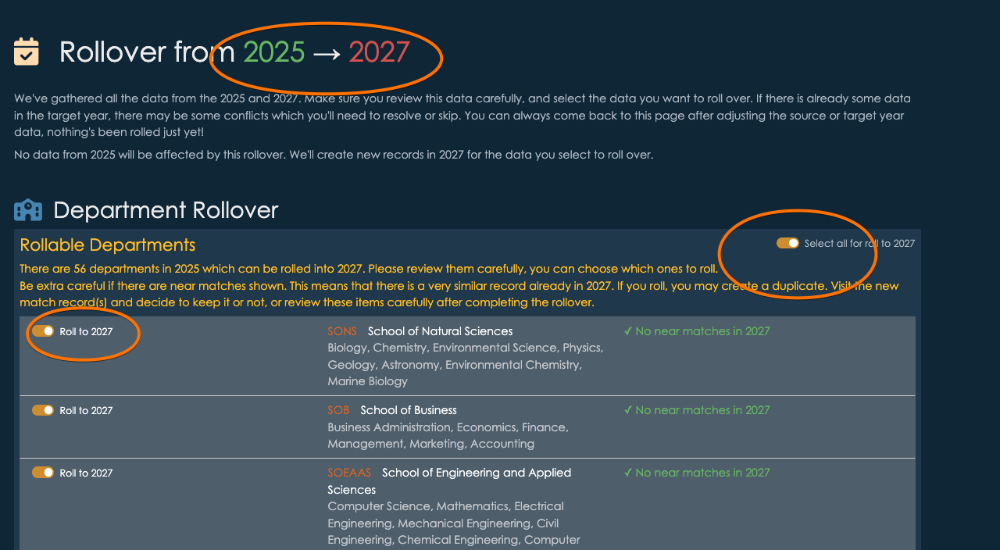
For the most part, the defaults tend to be the right choices. When duplicates are found, you can see their details. You can always delete the data in the target year, and then restart the rollover if you really want to include the duplicate in the roll.
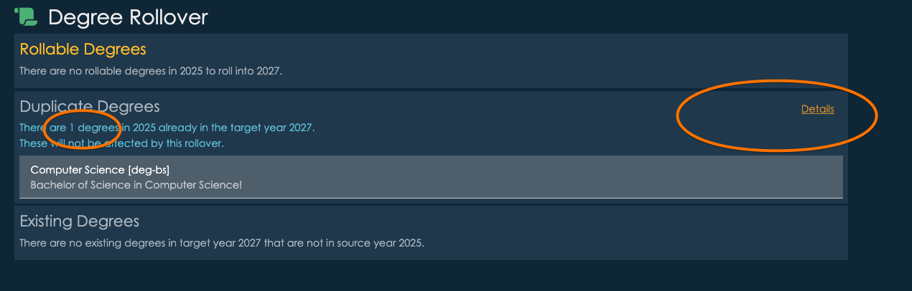
There may be thousands of records. It’s worth reviewing things until you are comfortable that the roll looks like it’s what you want. Once you do the rollover, the data that lands in the target year is there for good - or at least until you delete it manually!
When you are ready, click “Roll selected items” at the bottom of the screen.
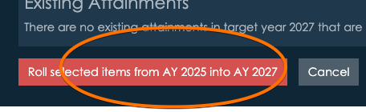
If there are minor errors, for example, if you’ve tried to roll an assignment (the record that indicates someone is working within a certain role, within a department), but you didn’t roll the actual person, then errors will be reported on the next screen - but the rest of the items will be rolled successfully. In the unlikely event there was a larger issue with the data you were rolling, we’ll let you know what happened, and we’ll rollback the entire change so you can try again.
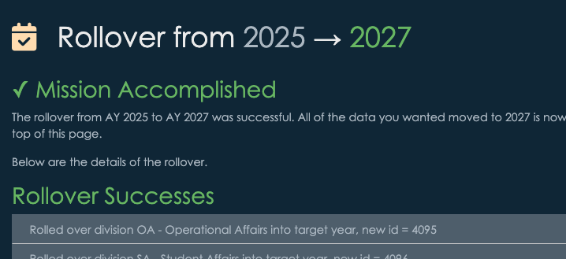
Go ahead and change your current year to the new AY that you created to check out the new data.
Navigating Across Academic Years w/ Stems
The data you hold about your academics is versioned. The most obvious example of this is a course catalog. The list of courses available changes from year to year. It’s more than just courses - the requirements of programs change. Most academic institutions handle this by using a concept of a catalog year - and they understand it’s critical to keep the old versions! Students who enter an institution in 2025, for example, are bound to the academic requirements that were in place in 2025 - not necessarily new ones that take effect later on.
We take this concept further, extending it to almost all data. Department names change over the years. Department structures undergo reorganizations, and the relationships between them change. The people, positions, and assignments within departments change over time. Workflows change too - and so do details like course attributes, timeblocks for scheduling, classrooms. Within appiversity, all of these things are versioned by Academic Year. The same course, department, person, or scheduling time block might exist in many different academic years, but they are distinct - a change in one year won’t necessarily effect another.
Stems
The concept of versioning is pretty straightforward. It’s cumbersome though - when looking at a course from 2024, it’s often hard to understand how you can see that same course from 2022 - at least in most enterprise solutions we’ve seen. This is where appiversity’s stem concept helps.
Unless you are starting from scratch, most of “this year’s” data is going to start from last year’s data. We help you rollover content from year to year, making this process pretty painless. During the rollover, we make copies of all the rolled data, updating the academic year it is associated with. Those copies however share one link - a stem - which is just a unique integer ID we assign the data.
For example: Imagine a new course titled HIST 109 - Introduction to Modern American History was created for academic year 2024, and given an ID of 932. That ID number is visible in the URL for the course page, but there’s another ID also created - the stem. Let’s say the stem is 8923.
In 2025, when your roll your courses over, HIST 109 - Introduction to Modern American History is copied - and the 2025 version gets a new ID - let’s just say its 1482. The stem value will be the same, we copy it during roll - 8923.
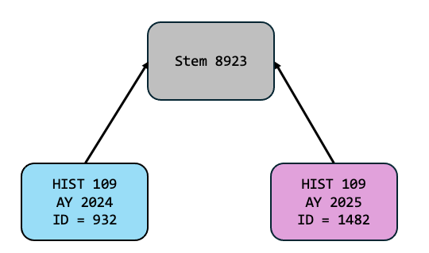
The great thing about this link is that if you make a change to the 2025 version of the course, we won’t loose the connection between them. Even if it’s a course number change - you always have the link via the stem to see previous versions of the course.
Navigation
Most of the time, you won’t even think about stems - they just work. If you are viewing a course for 2024 and you change your catalog year to 2023, appiversity will use the stem of the course you are viewing to automatically bring you the 2023 version of the course.
Sometimes, when you are accessing something that is versioned and you change the current academic year, the target academic year won’t have a version. For example, the HIST 109 class that was created in 2024 wont’ be found if you change your catalog year to 2023. In this case, appiversity will use the stem to show you all the years that course is present in, and give you the choice to either switch your academic year, or to stay within the year and view the larger course listings.
The same technique is used when viewing people, departments, roles, positions, degrees, workflows, timeblocks, classrooms, etc. In most cases, you can effortlessly navigate between academic years without losing place.
Stem Detection During Rollover
During the rollover process we take a lot of care to preserve stems. Sometimes, you might be rolling data from one year into another, where the target year already contains data. We will check to see if data in the source year and target year have the same stem values, and skip rolling over that item. We will also check to see if the target data has something that “looks the same” - meaning, maybe you already created a course with the same subject and number in the target year, but it’s in the source year of your rollover too. In these cases, appiversity will offer you the choice to merge the records so they share the same stem, or leave them distinct.
In most cases, if you are using rollover like we recommend (first, before starting to make changes on the target year!), you won’t run into any merges at all.
Users
There are several types of “users” in your institution.
- Outside (public) people - People who might view your catalog, department listings, even access some of your workflows - but are not part of your institution. We call these “Public People”, and you can learn more about how they login and interact with published materials and access workflows.
- Students - Students have an obvious connection to your institution! Students generally can’t edit much of your data though, they can interact with internal workflows, and access registration and records - and of course can browse department listings and your catalog. Student users are just “Public People” if you haven’t added Registration or Student Services to your account. Once you do add those, you’ll have access to Student listings.
- Faculty and Staff - Faculty and staff are the “People” in Department’s people listings. They have profiles, they have positions within your institution. They can be referenced in workflows, and are listed in scheduling. They are limited users, in that they cannot edit a lot - but depending on their role they have more access than public people and students.
All three of the user types above are limited users. In this section, we focus on full users - which we call “Knowledge Engineers”. These are the users that create the data - they build the catalog, they configure scheduling parameters (timeblocks, classroom lists), and create the department structures that describe your institution. These are the power users.
Knowledge Engineers (KE) Users
KE Users, usually labeled as “Users” in the app, have assigned sets of privileges. These include the ability to edit department data, catalog data, scheduling, registration, and even account settings and user listings themselves.
It’s important to understand that a KE User is probably also a “Person” in your Department listings. A quick example:
- The Registrar is someone working at your institution. They will be listed under “People” in Departments. They will likely be the recipient of many workflows.
- The Registrar is very likely also one of the people you want to have full edit access to the institution’s Course Catalog. In this case, the Registrar is also a KE User, and would have a User account.
There may be people who are only KE Users. Some institutions use Departments to list every department/division on campus, and so every employee has a “People” account. Other institutions stick to just the academic units, and some other key administrative positions. In the latter, you might have several administrative assistants who are responsible for maintaining the data on appiversity - they would be KE Users, but they might not be listed anywhere in Departments.
Of course, most faculty and staff are not going to be KE Users. Most faculty and staff access department listings and the course catalog, for example - but you do not allow them to make changes to that data.
Here’s a simple scenarios that might help you think about who are Users and who aren’t:
Example 1 - Course Modification Forms
- Faculty can submit a form to request a course description change. The form is a Workflow. The faculty member is a Person listed in Departments.
- Someone at your institution created the form to be used, and posted it on the internal university website for faculty to download and fill out. That person is a KE User - they create the workflow itself.
Example 2 - Catalog / Schedule Listing
- Faculty are listed as the instructors of a section in the scheduler. The Faculty member is a Person account - their information is listed in Departments. Public people (and students) can look up profile information about that faculty member, and see what other courses they are teaching.
- Someone at your institution performed the data entry to associate the faculty member with a section. That person is a KE User - they manipulate section data in the scheduling system.
Example 3 - Curriculum Committee
- Your curriculum committee is comprised of mostly faculty members. You’ve modeled your curriculum committee as a Department so you can publish listings of membership and roles. Each member is a Person in Departments, including the chair of the committee.
- The Chair of the committee is listed as the recipient for various Workflows used to request catalog changes to courses and programs. When the chair receives them, the curriculum committee deliberates and may approve the change. This is all possible with a Person account.
- When it comes to making the actual change to catalog data - if your institution wants the Chair to do that data entry - that’s perfectly fine! However, then that faculty member must also have a KE User account, so they can edit catalog data.
Now let’s look at how KE Users are created and managed
User Accounts
To access User listings you will need the Users privilege. If you have it, then Users will show up on your main dashboard.
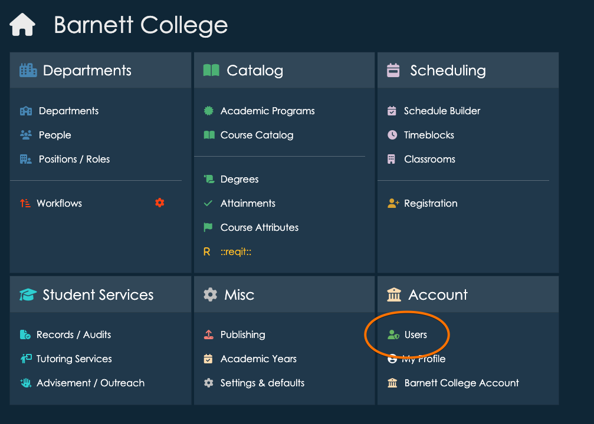
Click on Users to see a list of all users on your account. Each user listed will have a set of privileges that they have been given access to.
Adding a new Users
To create a new users, click “Add User”. All new users require a first name and last name, and an institutional email address. You will also add access privileges, which can be edited later as well.
Below, we are adding a new users with the ability to edit department and people data, and publish data to public channels.
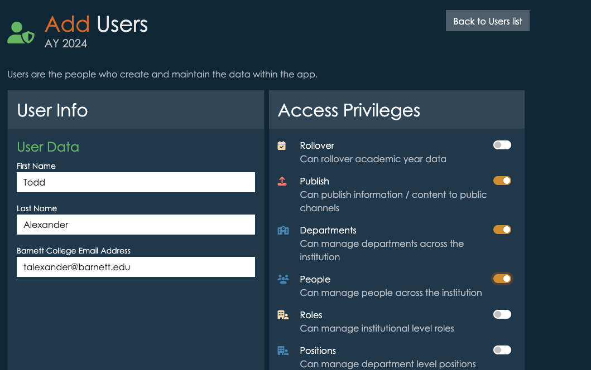
Important: If you add a new user with an email address already associated with someone with a Person account, that person is automatically “promoted” internally. You don’t need to do anything else - all the functionality “just works” with accounts that fall into both categories.
Activation
Notice you do not set a password for the new user. When the user is created, an automated email is sent to the person with an activation code and link. The activation link must be used within 7 days.
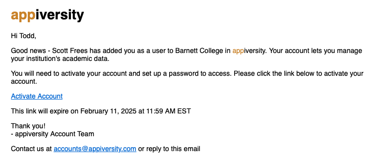
The user may click the link in the email, and they are brought to a page where they create a password. Once that process is complete, they can log in to their new account.
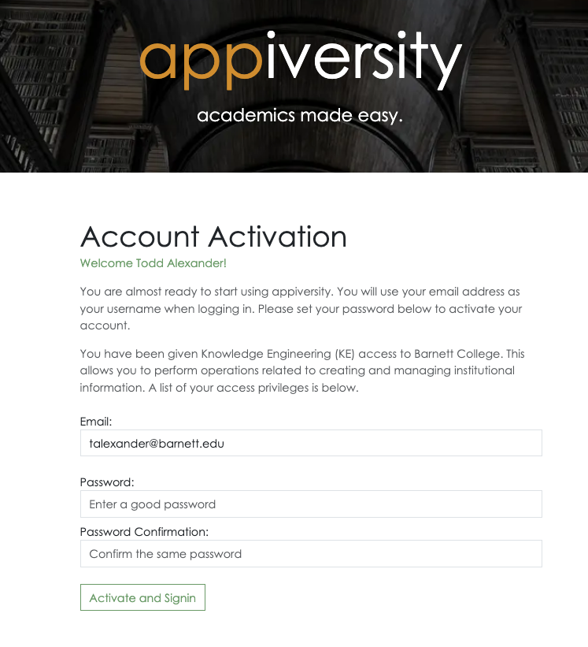
Editing Users
You can always select a user from the list and edit their account. You cannot change their email address, but you can toggle the various privileges associated with the user.
De-activating Users
You cannot delete a user once their account is created. This is because we create permanent records of actions performed by users on your data, so you always have a full audit trail of who did what, when. If users got deleted, it would make maintaining those audit trails a lot more difficult.
You can deactivate a user account however. Doing so prevents the user form performing any further action. If the person is also in the People listings of department, their deactivation does not effect their ability to access the application as a faculty/staff member.
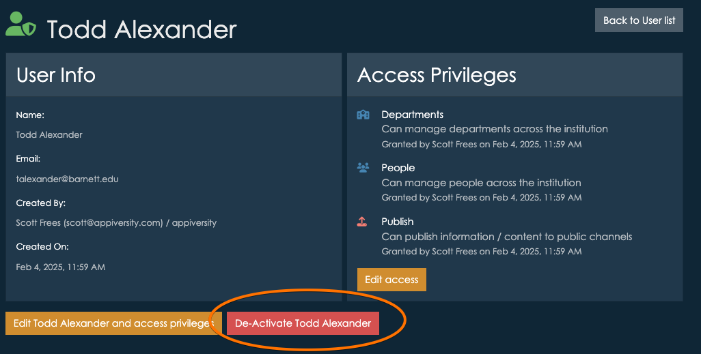
Signing in
Full Users have a username/password they can use to sign in, and they can also use OTL. Those with People, Student, or Public Person accounts may only sign in with OTL. When deactivating a user who still has a more limited account, make sure you advise them that while they can no longer user their password to login, OTL is still available
Privileges
KE Users can be given fine-grain control over the portions of the application they can access. In general, limited account users can view most data on appiversity:
Access for Limited Users
- Departments - All limited users (public, student, faculty/staff) can search and view listings of departments, people, positions, and roles.
- Workflows - All limited users can start workflows, and interact with workflows they are the next action person on.
- Catalog - All limited users can search courses and academic programs, view course and program details, including prerequisites and curricular maps. Limited users cannot directly view degrees, course attributes, attainments, or Reqit code - however they will see things that are actually associated with courses and degrees. For example, a course’s attributes will be visible when viewing the course, but the limited user cannot access the complete list of course attributes themselves.
- Scheduler - All limited users can view lists of timeblocks and classrooms, and can view a readonly version of schedules both in the past and current. All public details about a section - including instructor, seats available, classroom, time, day are viewable.
- Registration - Limited users are constrained to view/access only what their role entails. Students may register for courses. Faculty and other staff members can access registration overrides.
- Student Services - Students have full view of their transcripts, tutoring schedules, and all other information available. Faculty and staff have access to associated student data in a read-only manner.
KE User Privileges
Beyond what is listed above, Users are given the following privileges:
- Rollover - Can rollover academic year data and set the current academic year.
- Publish - Can publish information / content to public channels.
- Departments - Can manage departments across the institution.
- People - Can manage people across the institution.
- Roles - Can manage institutional level roles.
- Positions - Can manage department level positions and assignments.
- Workflow - Can create and edit workflows.
- Catalog - Manage catalog data, and access all data (degrees, course attributes, attainments, and Reqit code.).
- Users - Manage application (KE) users.
- Account - Manage institutional account settings.
- Representative of Record - Validates institutional data and primary point of contact. At least one user must have this privilege, and we use this to communicate to those individuals whenever we need to validate something about the institution, or to deal with billing.
Differences between People, Public People, and Users
There are four different kinds of user accounts on appiversity, and understanding the differences are important moving forward in this guide.
| Type | Description | Login Type |
|---|---|---|
| User (KE) | User accounts are for people who will be creating content on appiversity. These are the people who enter catalog data, define top level data like terms, grade types, academic year rollovers. They can create departments, people, degrees, programs, etc. Most people in your institution will not have User accounts. | Password and OTL Token |
| People (Person) | This is the most common type of account for a staff member or faculty member to have. At a minimum, this means they are listed in the People section of appiversity. They will have a publishable profile page, and can be assigned positions at the institution (ie Department Chair). Based on their role, they will have access to use many parts of appiversity. For example, all People can access Workflows to start workflows. People with faculty roles will likely have some access to schedule builder. | OTL Token |
| Student1 | Student accounts have access to their own student records, along with access to registration/scheduling services (for accounts with Registration and Records). Students typically access data through public (published) resources, but do have the ability to browse the Catalog, search People and Department listings, and can (if they choose) access Workflows from within appiversity. | OTL Token |
| Public Person | Public people are unaffiliated with the institution. They do not have a university/college email address. In most cases, a Public Person account is created by the individual in order to fill out a Workflow that is marked as public. appiversity does not use Public Person accounts for any purpose other than verifying email addresses. The person will be asked to enter their email address, and they will be sent a verification email to activate their account. From that point forward, each time they initiate an action on any public-facing appiversity feature, they will receive a one-time-token, sent to their email address, to verify their identity. | OTL Token |
For accounts that are using Registration and Records, students have limited accounts, and can access their own workflow queue through appiversity. Otherwise, students utilize the public person login and feature access flow.
Sign in and Credentials
There are two ways to sign in to appiversity:
- With a password (KE Users only - see users)
- One-Time-Links - OTLs
The first step is to enter your *email address, associated with your appiversity account, at the login screen. There is a single textbox, along with a captcha to prevent automated bots from attempting to log in. In most cases, this captcha will infer from your browser that you are indeed a real living human being, and you’ll be able to simply type your email address and click next!
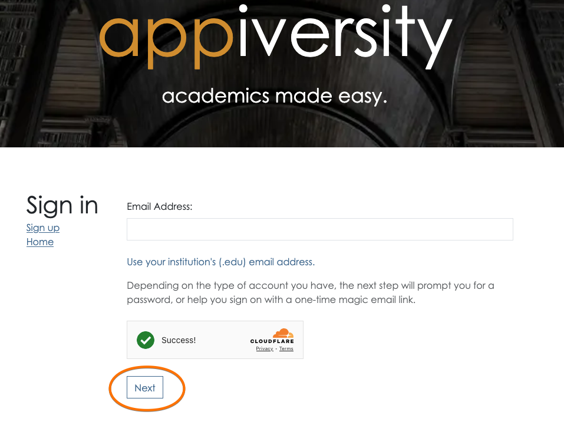
Based on your email address, you will be redirected to either enter your password - for KE users, or you will be sent an OTL and received a prompt to check your email.
Learn more about Password sign in and OTL sign in
Single Sign On (SSO)
Accounts with private hosting (learn more) can also integrate Single Sign-On (SSO) for streamlined authentication. We support common SSO providers, including Google Workspace, Microsoft Entra ID (formerly Azure AD), Okta, LDAP, and SAML-based authentication systems. SSO allows users to log in using their institutional credentials, improving security and reducing the need for separate passwords. Our team will work with your IT department to implement the most effective SSO strategy based on your infrastructure and security policies. SSO is a paid add-on and requires additional configuration to ensure seamless integration with your existing authentication system.
Logging in with a Password
KE users create passwords when the activate their account. KE users can always login with OTL as well. We recommend passwords of over 12 characters, and we also recommend that you avoid reusing passwords as much as possible.
When prompted, you may enter your password and click “Sign in”.
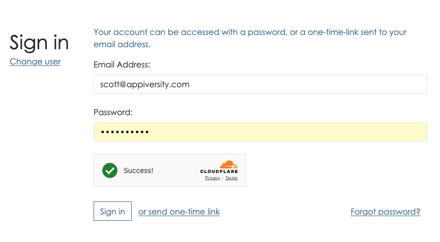
From the password screen, you can also choose to receive an OTL instead. Do this when you either can’t remember your password, or you are on a machine that you don’t feel comfortable entering your password on. As described below OTL requires access to your email inbox, and the codes are temporary - which are idea for using public computers.
If you have forgotten your password, you can also click the “Forgot password” link to reset it
Logging in with a OTL / Token
For non-KE users (faculty, staff, students), you will be presented with a screen asking for your “one time login code”. This code will have been emailed to you. If you don’t receive it after a few minutes, please check you entered your email address in correctly, and also check your spam folders.
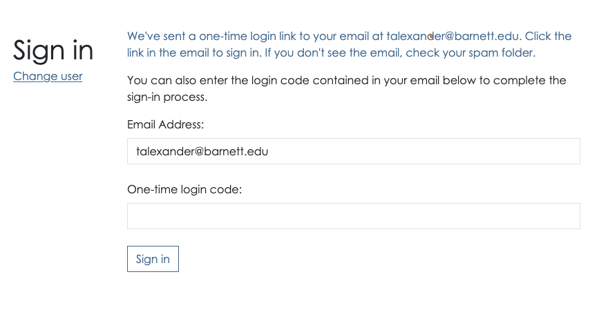
The email that your receive contains two things, either of which will get you signed in:
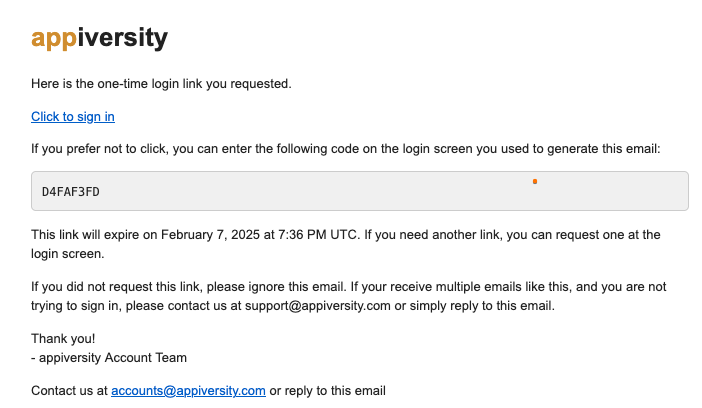
The link (Click here to sign in) will take you right to appiversity, logged in - you’ll land on your dashboard. Once clicked, the link is no longer valid. The link is valid for 10 minutes from the time it was generated otherwise.
If you don’t want to click the link, and you are still on the OTL prompt in your web browser, you can also enter the code itself - D4FAF3FD in the screenshot above in the prompt.
OTL and Security
appiversity employs GUID (Globally Unique Identifier) and OTL (One-Time Link) mechanisms to enhance authentication security while ensuring a seamless user experience. These methods are designed to provide strong security against unauthorized access, phishing attacks, and credential-based threats.
GUID-Based Authentication Security
A GUID (Globally Unique Identifier) is a 128-bit randomly generated identifier that is unique across all systems. In the context of authentication, GUIDs serve as secure, non-guessable tokens used to identify a user session or authentication request.
Why GUIDs Enhance Security
- Uniqueness: Each GUID is statistically unique, making it virtually impossible for attackers to guess or predict valid authentication tokens.
- Randomness: The randomness of GUIDs prevents enumeration attacks, where an attacker might attempt to cycle through predictable user IDs or session tokens.
- No Direct Association: Unlike usernames or email addresses, GUIDs do not directly expose identifiable user information, reducing the risk of credential leaks.
- Short-Lived Usage: GUIDs used for authentication short and defined period, mitigating the risk of replay attacks.
OTL (One-Time Link) Security
OTL (One-Time Link) authentication is a method where users receive a unique, temporary link via email or another secure channel to log in without needing a password. That link contains the required GUID described above, and is exactly what appiversity uses for allowing most users to login.
Security Benefits of OTL Authentication:
- No Static Credentials: Since there are no permanent passwords, attackers cannot steal or reuse credentials through phishing or database leaks.
- Expiration Control: One-time links are valid for a short duration, reducing the risk of unauthorized use if intercepted.
- Single-Use Nature: Each OTL is valid for only one login attempt, preventing replay attacks.
- Limited Exposure: Since OTLs are sent via a controlled channel (e.g., email), an attacker would need access to that channel to exploit them.
Public account sign in
In some cases, you will allow public people to interact with your institution. The most common example - a public workflow. In this case, the person accessing the workflow needs to be able to submit the workflow, and it’s important we only allow identifiable people to do this to prevent abuse.
Email address
When someone requests access to something on appiversity, and they are not logged in, they will always be asked for an email address. The person will be asked to use their .edu address IF they have one, but also that it is not required.
When they enter their email address, we route them through three possible paths:
- If their email address is associated with an account, or a record in your People listings, then we just route them to the standard sign in user flow.
- If their email address is new to us, we start them down the flow of creating a new “Public Person” profile. See below.
- If their email address is already associated with a public person profile, then they are emailed an OTL and can sign on accordingly.
Creating a Public Person profile
New people access your institution will be asked to provide their name and phone number. We will not contact this person for any reason other than to help them authenticate using OTL. You will have access to the information they provide however.
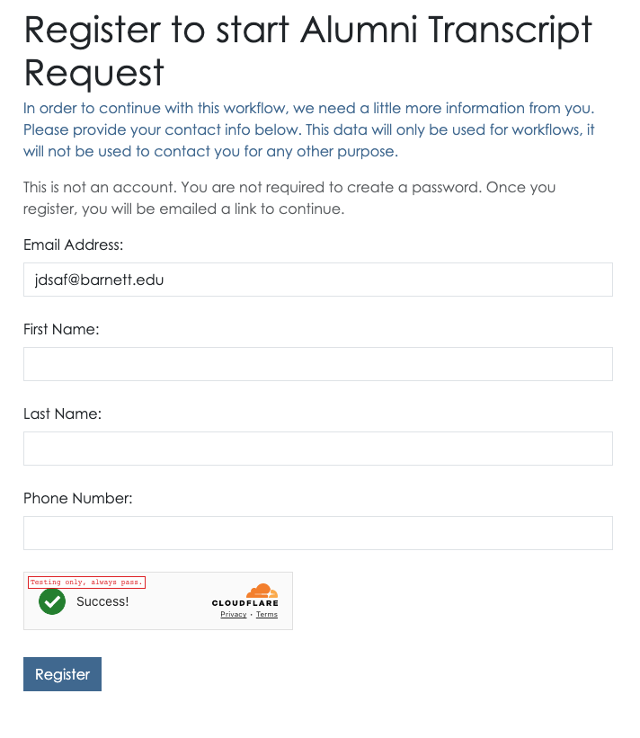
Once they’ve registered, they can login using an OTL. Note, this requires the person to have access to the email address inbox they claim to be using - which helps prevent a lot of problems for you, and us. We can also block abuse at the email level if a particular person continues to access appiversity in away that either you, or we, determine to be problematic.
Resetting your password
When logging in, you may choose to reset your password by clicking on the “Forgot Password” link at the bottom of the login screen.
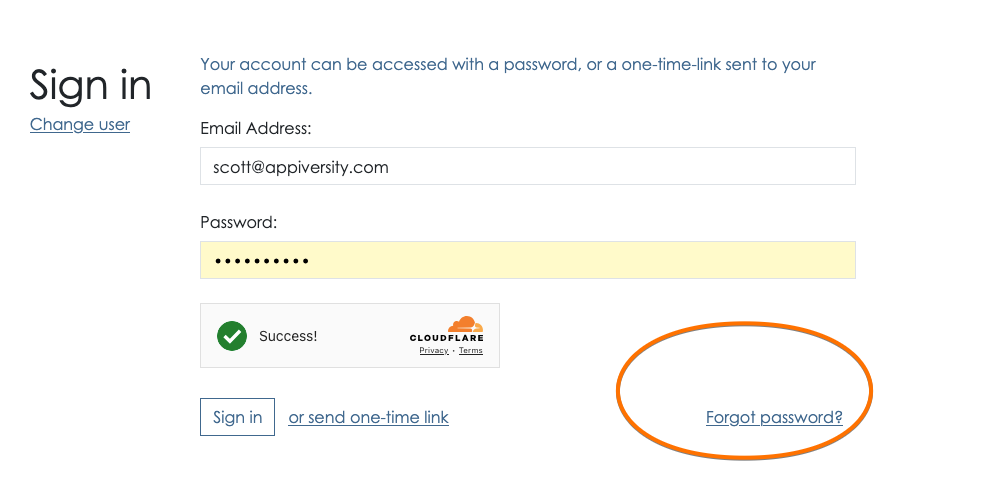
You’ve already entered your email address, so if you have an account with us we’ll send you a link to reset your password. If you don’t receive it within a few minutes, check that you’ve entered your email address correctly, and check your spam folder.
The email you receive will have a link, and when you visit that link you’ll receive simple instructions to reset your password. As soon as you reset it, you’ll be logged in.
People & Departments
-
Using spreadsheets and files to keep track of who’s in each department, committee, and program? Are a bunch of other offices doing the same thing? Are the lists manually maintained in a dozen digital systems… separately?
-
When someone needs information, where do they go? How do they get a report?
-
Can you give someone access without them being able to make changes?
-
Whenever something does change, how many spreadsheets need to get updated? Can you tell who made the changes, and what they were? Who can change the data in this database, or that? Is the college website updated?
Departments is a centralized, interactive, and searchable registry of everyone in your institution. It tracks which s and groups they belong to, and what roles they play.
Departments lets you embed these lists on your institution’s web page, and integrate data into your other systems. Everyone sees live data.
Departments also lets you manage multiple years, so anyone can access listings from different years. It lets you manage people and their roles just like you manage course catalogs - with full archives of past years.
You can control who has access to what, and always have an audit trail of changes.
It’s a single source of truth for who’s who on campus.
Your Data
You are never locked in. Department data is always exportable in easy to use formats, and always ready to be integrated. You can organize your department and group structures any way you like.
Use everywhere
Department’s killer feature is integration. You can manage s, people, positions and roles in one place - but the data can flow everywhere. Easily embed live views on web pages. Export as documents / spreadsheets / PDFs. Share links to live reports. Integrate with other systems with industry standard JSON, CSV, Webhooks, and a complete API.
No complex set up. No complicated training. No ugly and awkward user experience or workarounds. It just works.
Learn more
- Departments - the divisions within your institution
- People - the people who make up those divisions
- Positions - the connection between people and departments - the roles they play
Department
Departments are the organizational units of your institution.
Departments can be academic departments, administrative units, or any other grouping of people. At a minimum, all academic units should be represented if you plan to use Catalog and other appiversity features. We recommend you organize academic Departments under a single parent, such as “Academic Affairs” so you can later add different non-academic organizations to fill out your organizational chart.
Remember: Academic Departments are not the same as Academic Programs , like a major, minor, or graduate program. Academic Departments can be connected to multiple academic programs.
Listings
Departments can be created, edited, and searched.
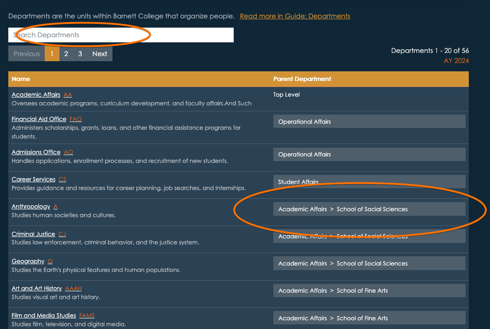
Organizational structure is front and center, you can always see where each department falls within the organization, and access org-charts from any department page.
Note, while only appiversity users, faculty, and staff can log in and view the pages for Departments through the interface in these screenshots, the same data is available to the public if you choose to publish department listings. For departments, the department data can be embedded into any website you choose - which includes navigational links to parent and child departments, along with listings of the people who work within the departments.
People
People listings are searchable by name and email address. For users with the People privilege, new People records can be added or imported.
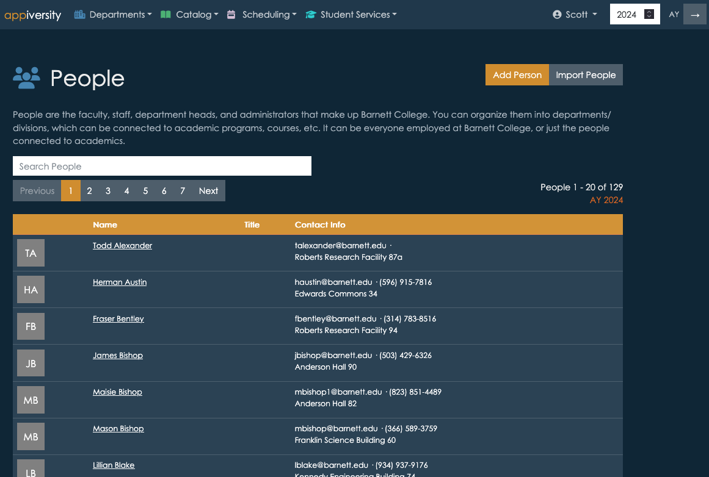
When viewing a given person’s profile, their positions within your institution will be listed, along with other biographical info.
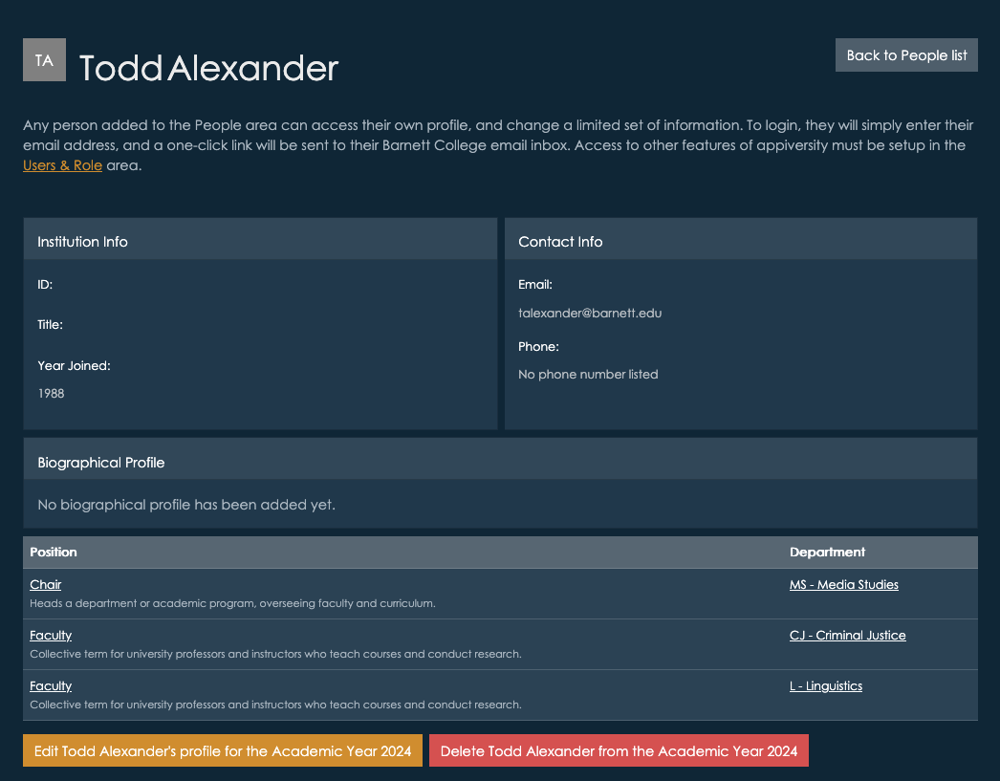
Note, while only appiversity users, faculty, and staff can log in and view profiles for People through the interface in these screenshots, the same data is available to the public if you choose to publish department listings. For people, their profile data can be embedded into any website you choose. Since everyone listed in People can also login to appiversity and update their own profile, this is a great way for your institution to distribute the workload when keeping everyone’s information up to date.
People Avatars (logos)
By default, we will use the person’s email address to look up whether they have defined an image to accompany their name with https://gravatar.com/. While many people have already created an account with gravitar (often by way of other third parties), some haven’t - and you (or the person themselves) can always upload an image to use.
Roles, Positions, and Assignments
Roles are defined at the top level of your institution. A role might be “Dean”, “Department Chair”, “Faculty” “Staff” or “Student Worker” and you can create as many roles as you need. Roles are used to create positions within Departments, but the actual roles are defined at the top level - so try to use generic terms that can be used across as many divisions as possible. This lets Insights do it’s best work - so it can integrate data about roles across many Departments.
Roles are just labels, Positions are actually filled by People and connected to Departments. For example, the role Dean would be used to create a Position in each of the academic Departments that have a dean. The Position would then be filled by creating an Assignment for a specific person. This is how the we track who is in what role, and when. Positions can have additional attributes, like interim.
When you define positions within a department, you will be able to specify how many positions there are. For example, a department might have many faculty positions, but only one dean.
You can also create roles for committees, for example “Academic Review Committee Representative”. If representatives are selected from each academic department, you can then create a position for each department, and then fill the position with a specific person. You can also create a department for “Academic Review Committee” and defined a Role for “Chair” and several “Member” positions - and organize the committee this way. The choice is yours!
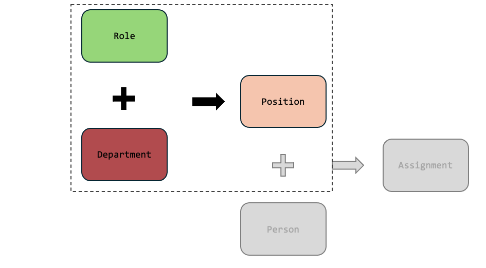
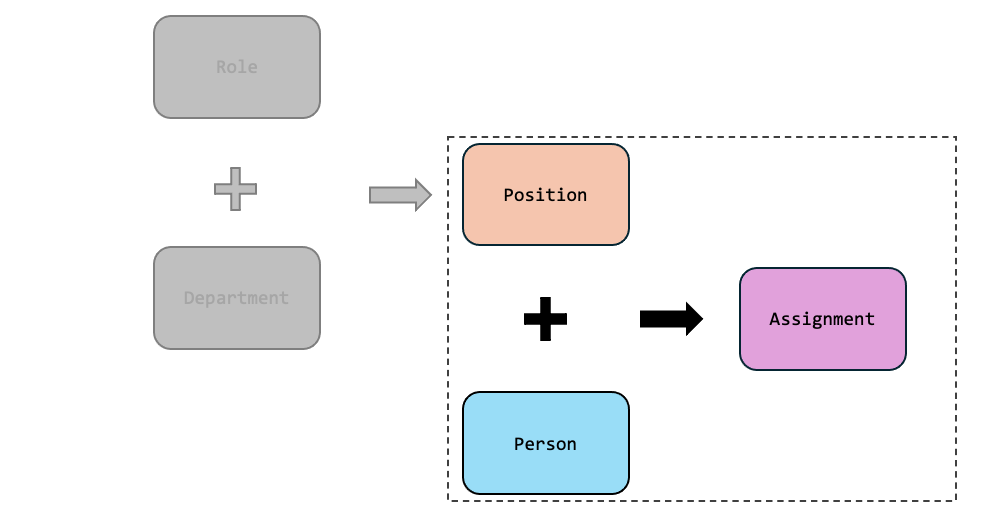
Creating Roles
The Roles listings are accessible from the dashboard, and main menu under departments. Roles are simple, but choose them carefully. The label and description you use should be as generic as they can be, so they can be used across many departments. The more reuse you get out a Role, the better reporting and aggregation you get! You can always refine the description of a role when creating a position within a specific department.
Creating Positions
Positions are part of a department, and so you create positions from within a department page. For example, if we were looking at positions within a Biology department, we might see positions for faculty, adjunct faculty, and a department chair. These are Roles, but now they have been associated with a specific department.
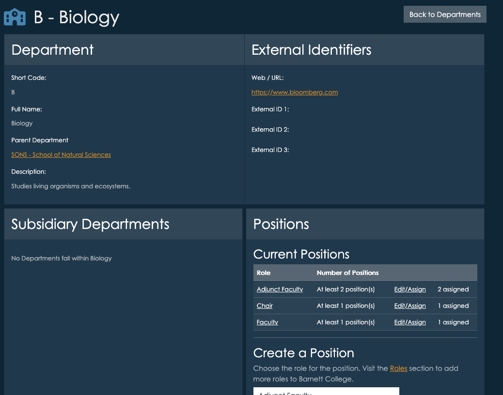
You can create any number of positions within a department, using roles you defined in the Roles listings. Each position can have a “multiplicity” - meaning you can say there is always “exactly 1” chair, or there are “up to 10 adjunct faculty”.
Choosing the right level
Always create positions at the right level. For example, if the department is a school/unit, containing several academic department, and you have a role called “Department Chair”, it shouldn’t be added to the parent school/unit, it should be added to the actual academic department where the chair sits. All “Department Chairs” in departments under the parent will still be listed - but this way the department chair will be specifically attached to the department that the person is actually chairing.
For instance, if there is a School of Science, and within it sits a Chemistry department, the Department Chair for Chemistry should be listed as a position in the Chemistry department.
Creating Assignments
Assignments are the most important step - they stich the position together with a person, connecting everything. From the position portion of the department page, click “Edit/Assign”.
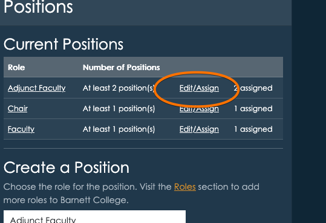
This brings you to the position details page, and towards the bottom you can select people from your People listings to fill those positions.
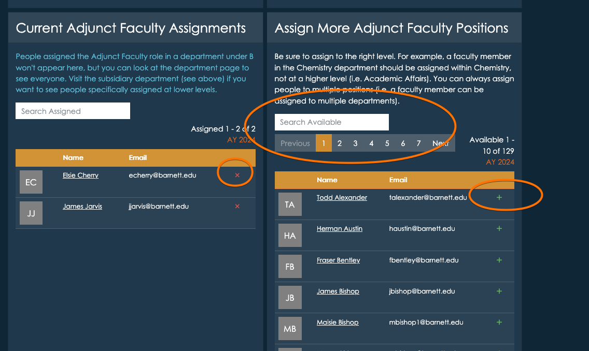
appiversity Workflows
Workflows can replace the paper forms, Word documents, and PDF files that you are circulating via email to drive approvals and workflow.
Here’s the scenario to think about:
- A student wants to drop a course.
- The student needs to fill out a form, and get their instructor’s signature.
- From there, they may need to have that form forwarded to the department chair or dean for another round of approval.
- Lastly, the form is forwarded to the registrar, where the request is processed.
This scenario get’s repeated within academics countless times - from student requests, faculty travel requests, course scheduling modifications, graduation applications, etc.
Ten or fifteen years ago, most institutions did this with paper forms, where each person along the approval chain needed to sign the document. There’s a certain convenience to this - there’s just one copy of the form, and it’s easy to fill out. It’s wasteful, and expensive though - and forms get lost.
Then we all started digitizing, and it went something like this:
- Paper documents were converted into PDFs, but they were really difficult to “sign”. People printed them, filled them out, signed them, scanned them, and emailed them. This didn’t help much!
- PDFs were then made “fillable”, which helped, since now at least the form data didn’t need to to be handwritten anymore!
- PDFs could be digitally signed - either by drawing a signature, attaching a photo of a drawn signature, or using a digital signature that needed to be created and configured on the user’s computer. This seemed right - but of course getting the signatures to reliably work, on everyone’s computer, was a nightmare.
Ultimately, we replaced wasteful paper forms with thousands of email attachments, IT headaches configuring digital signatures (which really aren’t necessary - these aren’t exactly legal documents!), and aggravation.
After all that, those digital documents remain in everyone’s email archives - there’s no repository for them. There’s no real paper trail at all!
Some institutions, recognizing the inefficiencies, adopted tools from the legal and real estate industry, which managed the digital signing of documents across approval chains without installation and email forwarding - but they are expensive.
Workflows offers an alternative. With workflows, you can easily create your forms and publish them in a searchable listing. Users can fill forms, and get data prepopulated - which drastically improves accuracy. You can create approval chains, and the form is instantaneously routed to where it needs to go. Every step along the way, there is a full audit of who’s approving, and when. All stakeholders can see the status of the approval and workflow. When the workflow is complete, it’s archived and searchable from one place - by everyone.
Finally, workflows is free (although long term retention is limited to paid plans). It’s included in the Kickstart package.
Explore Workflow Documentation
- Creating Workflows - learn how to create new workflows for your constituents.
- Publishing Workflows - learn how to publish searchable workflow listings, allowing anyone to initiate a workflow.
- Public Workflows - explore how students and public (non-affiliated) people interact with public workflows - including email verification and checking on workflow status.
- Submitting / Starting Workflows - see how forms will be submitted by constituents.
- Workflow Notifications - learn how users are notified of workflow activity, and what their options are.
- Workflow Queue - see how your users can quickly find workflows that need their attention, and how they can review archived workflows to leverage a full and accurate “paper trail”.
- Workflow Approval - review the features available to approvers, and how workflows flow through approval, revision, and rejection states.
What’s a Workflow?
When we talk about a Workflow, we are referring to the entire process associated around a particular approval or workflow sequence.
For example, Course Drop is a workflow. It requires the initiator (presumably a student) to populate a form documenting which course they are dropping. This information is then approved or rejected by a sequence of people - the instructor, the chair, the dean. The information passed to the registrar for processing. This entire process is a workflow, and each step is a workflow step.
Whe we say “Create a workflow”, we mean creating the entire process sequence:
- Defining what data needs to be entered to initiate the workflow
- Defining each approval step
- Defining what each approval step may add to the flow. For example, attaching additional documentation or data.
Creating a workflow is different than someone starting a workflow - or initiating a course drop. Think of creating a workflow as creating the form. You do that once (or at least once in a while). Then people fill out copies of the form - which is like starting a workflow in appiversity.
Who can create a workflow
Remember there are different categories of stakeholders using appiversity at your institution. You have people, who are staff members, faculty, employees. You have students. You have public people - who are not necessarily associated with the institution at all. While these stakeholders might start or initiate a workflow, they aren’t the people who will be creating the workflow in the first place.
Only appiversity users with the Workflows account privilege may create, edit, delete, and rollover workflows. You can check a user’s profile (or your own) to see if if this privilege has been granted:

Creating your first Workflow
Workflows can be accessed from the institutional home page or the main toolbar. The cog icon is a short cut to the management area of Workflows, which is where you will create new workflows from.


Once you arrive at the Workflows screen, you have three tabs at the top:
- Start a Workflow - this is where you can initiate a workflow that already exists. Anyone who is in People can access this tab, and start a workflow.
- My Workflow Queue - this is where a list of workflows already initiated by you, or that you are an approver on are listed. Think of this as your “inbox”, and also your archive. We’ll talk more about this later after we create a few workflows to use.
- Manage Workflows - this is where we will visit first. It’s where we create workflows. Note if you do not have the Workflows privilege, you will not see this tab!

Click New Workflow to create a new workflow:
Defining Workflow Data
Workflows consist of workflow data, which is information about the workflow process in general. This includes it’s name, a description, and access flags.
Active / Inactive
Workflows can be set to active or inactive. Active workflows can be started, while inactive workflows cannot. Keeping a workflow inactive while it is a draft, or until you want to allow access is generally a good idea. Once a workflow is started by someone, the workflow process itself cannot be deleted. Workflows cannot be edited, so you will want to review them carefully before activating.
Note that workflows can by rolled over from AY to AY. You’ll notice that you are activating the new workflow for a given AY. The workflow will rollover to future AYs (during the normal rollover process) with the same Active/Inactive state.
Restricted vs Public
Workflows marked as public can be initiated by anyone. This setting makes sense when the workflow is something a student would start (an Add/Drop request for a course), or even workflows that might be initiated by completely external people (maybe an inquiry). “Public” workflows still require the submitter/initiator to provide a verifiable email address, but they do not need to belong to the institution.
Workflows marked as restricted can only be initiated by an appiversity user, they need to be logged in. This includes anyone with a full User account and anyone listed in People (ex. faculty, staff). Restricted makes sense for workflows like a special payment form, or a grade change that can only be initiated by faculty. Restricted workflows will never be listed in published listings, they can only be started from within appiversity itself.
Let’s start by creating an example for Course Drop. We’ll give it a title and description, and mark it as active and public, since it may be initiated by a student.
Once you’ve filled out the necessary data, click Next to move on to submission data*.

Defining Submission Data
Submission data is the information that the form’s initiator must provide to start the workflow. You are required to provide instructions, which can be as simple as “Please fill out all required data”, or can include additional contextual information. The person starting this workflow will see these instructions, so consider your audience! You will have the opportunity to provide instructions to approvals separately, these instructions should only be addressing what someone needs to know to start or request the workflow.
Next, you can add submission fields and submission documents. This is where you have the freedom to reuse as much or as little of your institution’s existing processes as you like.
Submission Document Attachments
If you already have a PDF or Word Doc that you are happy with, any you just want to use Workflows to manage the approval process, you might want to simply adopt a single submission document here. You can upload an empty form in this area, and each time someone wants to initiate this workflow they will be asked to download the form (they will be given a link), fill it out, and upload it. That filled out form will be passed along and viewable to all the approvers. By using document attachments here, Workflow is removing the need for email forwarding, email attachments, and signatures - but you are keeping the data input functionality of your existing forms.
Note, you can define multiple submission documents that the submitter must fill out and upload for a single workflow.
User-provided documents
Sometimes workflows require users to upload their own documents, and not necessarily download a document to fill out. A good example of this might ben a faculty travel request. The workflow may require that the faculty member (the person initiating the workflow) upload supporting documentation - perhaps proof that they are presenting at conference. In this case, you can define a submission document attachement, but you can omit supplying a downloadable document. When submitting the workflow, the user will asked to upload their own document.

Submission Fields
You can use submission fields to define data inputs that will be available to users directly, through the web interface. Using submission fields is a great way to create workflows because they are the fastest way for users to enter data - no downloading, editing, and uploading. They are also faster to approve, since the submitted data will be displayed in an easy to identify and accessible way to everyone reviewing the workflow. Submissions fields can be of several types:
- Text - short text input fields, like someone’s name.
- Long Text - a longer text input where you might ask the submitter to provide a lengthy explanation or justification of the text. This won’t permit a lot of formatting, so consider submission document attachments if you want to receive elaborate formatting here.
- Number - numeric input field
- Date - date input
- Checkbox - suitable for true/false, yes know.
- Choice - create a list of options for the user to choose from
You can add any number of submission fields. Each field will require you to define it’s name (primary label visible to the user), description (briefly explains to the submitter specific instructions about this field), and whether or not it is a required field.
Hybrid Submission
Of course, you can use both. If there are some forms that you’d like to use PDFs, Word, or any other type of document for, they can be used together with any number of submission fields too. At each step along the approval chain, all submission data fields and all documents are accessible.
For demonstration, let’s build the Drop Course form so it requires a user to enter their name, the course’s title, subject, course number, section number, and an indication of why they were dropping the course - a choice between “The course is not required for me”, “The course isn’t what I expected”, and “Other”. This isn’t something you generally find on Course Drop forms, but as an example it gives us a chance to demonstrate the choice list fields.
Adding the student’s name (you should probably ask for some other form of more specific identifying information), along with course data is best as a series of Text inputs. Since course numbers sometimes have alphabetical values (such as 101L for 101 w/ Lab, for example), use Text instead of Number if there is any doubt.
For each, select the Text button, and fill out the necessary information. Let’s also mark each as required.


etc. etc.
For the choice list describing why the course is being dropped, the dialog box will ask you to
provide the options users can choose from. Remember, each option must be separated by semi-colon.
This does mean that an option cannot have a semi-colon within it, as that is what is used as the delimiter.

Display Order
When someone starts a submission for this workflow, the input fields are displayed in the same order they are listed in on the submission building screen. You can use the up and down arrows to re-order the fields.

What about email address?
You might be wondering why we aren’t capturing the student’s email address. Remember that when someone starts this workflow, they are required to supply an email address. If the user is logged into appiversity (they are in the Users or People groups), then this information is already known. If they are not logged in, they will be asked to verify their email address - which is a simple and fast process that ensures the workflow is being started by the owner of the supplied email address.
The users’s email address will be available to anyone reviewing the workflow, at all times. Therefore, you normally do not need to capture this type of data.
For restricted workflows - where the workflow can only be created by someone in the Users or People groups, you don’t even need to capture their name! All identifying information about the user who is initiating a restricted workflow is automatically added to every workflow.
Defining Approval Steps
Once you’ve completed the submission data fields (and documents, if you wish), it’s time to move on to the approval chain. Each workflow must have at least one approval step. In the simplest workflow, a submitter may fill out information and submit it to the sole approver - who would approve/reject/process the workflow request without any other input from others. In other workflows, you might have a much longer sequence of steps - where multiple stakeholders must approve the request before final processing. On each approval step, you can define additional instructions, and also ask for additional data to be added to the workflow.
Every approval step will allow the “approver” to (1) approve the workflow, sending it to the next approver, or marking it as complete, (2) reject the workflow, marking it as “rejected” and notifying the submitter, or (3) request revision, which will send the workflow back to the last person who either approved or submitted the workflow, with a reason for the request. In all cases, the people who need to know will receive notifications via email that a workflow item is “in their queue” - whether that’s because they are the next approver, or because it’s been kicked back to them as a request for revision.
At all times, the submitter will be able to see who has the workflow. This creates much more transparency to workflows - no more emails that go missing!

In the case of our running example, let’s define a three step sequence of approval. First, the instructor of the course approves, then the Dean, and then the Registrar.
Start by clicking + New Step.
Approval Step 1 - the instructor
Every step has a title - the Step Label. This will be visible in several places, so try to be descriptive. In addition, we’ll add a description/instruction - which will be visible to the approver when the workflow reaches them.
You will also see a similar set of input field choices as you saw when defining submission data. Don’t be confused - this is not the same! These define data fields (or documents) that you expect the approver to add to the workflow. This data might be necessary for the next approver, for example.
In our running example, let’s ask the instructor to indicate whether or not the student has attended at all. Maybe this would be important information for financial aid purposes.

Selecting the Approver
Each approval step can be open ended, or a list of pre-selected approvers can be identified.
- No pre-selected approver - the submitter can select any recipient for the approval, from the list of People in your institution. This is the most flexible, but also puts a lot of responsibility on the submitter to determine who their workflow needs to go to first. You’ll want to be extremely clear in your submission instruction when using this option.
- Pre-Selected by role - Choose this options when the approval should go to people who hold a particular role at the institution - like “faculty”, “Dean”, or “Registrar”. This will often be the best choice for most institution-wide workflows.
- Pre-Selected by position - choose this option if the approval should be received by someone holding a specific position, which is a role tied to a particular department. Check out (Roles, Positions & Assignments)[./roles-positions-assignments.html] for help understanding the difference between a Position and a Role. This is a good option when the form is specific to a certain department.
- Pre-Selected by person - choose this option when the approval step should be received by a specific individual. This is the least flexible option, as you’ll need to update the workflow if someone change’s positions or leaves the institution.
For our example, we know that first approver should be an instructor. We can specify this by using the Pre-Selected by role option, and adding pre-selections for both Faculty and Adjunct. Depending on how you set up your roles, you may have different options.
Note, the submitter of this workflow will be able to choose anyone belonging to ANY of these roles.

Click +Save New Step to continue.

The approval step will be summarized in the display, and you can add a the next step by clicking + New Step.
Approval Step 2 - the Dean
For this approval step, you might not need anything else from the Dean - just an approval, rejection, or request for revision. Approval fields and documents are optional, so you can just move right past this and onto the Pre-Selected Approvals.
In the example institution, there is a Dean role. We’ll select that and move on.

Click +Save New Step to continue.
Processing Step (Approval Step 3) - the Registrar
The final step is the registrar’s office, which is where the request will be processed. Once again, this step doesn’t require the Registrar to add any data, only approval/rejection/revision.
Click +Save New Step to continue. Note that with all three steps entered, you can remove them by clicking the X button at the right, or re-order them using the arrows on the left.

Completing the Workflow
At this point, we’ve created the submission data and approval chain. We are ready to complete, and since we’ve marked it as active it will be listed in the workflow listings.
Click Next.

Review the workflow carefully, and click Create Workflow. Now the workflow is complete and is available for use!
This document is a user guide for starting an existing public workflow. It describes the sequence of steps a user will perform to start a workflow when they do not have an appiversity account. This is the situation where you’ve published a workflow and the form is to be started by students or anyone not affiliated with your institution.
Restricted workflows, which require appiversity login, are discussed here.
Public Listings and Active Academic Year
Unlike most things in appiversity, workflows are frequently accessed by people who are not logged into the application. When non-logged in people access workflows, they are typically accessing them via published HTML listings pages, or from links they have saved (for example, in an email).
Workflows can only be initiated or started if they belong to the current academic year. Checkout the workflows section in our active AY guide for more details.
Submitting a Workflow as an unaffiliated user
Workflow listings can be published in a variety of ways, but the most common is through an iframe listing, which depending on custom styling may look something like this:

This listing might appear anywhere on your institution’s public-facing website (see publishing in general, and specifically publishing workflows).
Clicking Begin will start the submission process.
If the user is not logged in, they will be asked to provide their email address.

If the email address does not match an appiversity user, or an institutional (People) user, then appiversity treats this person as an unaffiliated person, or “Public Person”. If the email address has already been used to register, a one-time-link to access/start their workflow will be emailed to them.
If the email address provided does not match an existing record, they will be prompted to register. Note that this registration process collects very limited data, it is only used to verify email addresses (see note below).

Once the registration information is collected, the user is notified that a one-time-link has been sent to their email address. This link (and code contained within the email) can be used to continue on to workflow submission.

At this point, the workflow form looks the same as if the user was a full appiversity user. The only difference is the top navigation bar, which only contains a Workflows drop down listing. This listing will include all the other workflows (if any) that were submitted by the same email address.
Note appiversity takes precautions against SPAM and bot submission of Workflows. No workflow can be submitted unless the email address provided has been validated, using the one-time-link provided in the email address. If in the event someone’s email address becomes compromised, and workflow submissions are being created with malicious intent (flooding workflow queues, for example), we can blacklist the email address. Contact support for requests and assistance)
Accessing a Submitted Workflow with a Permalink
Every workflow submitted is a assigned a globally unique identifier, which is part of it’s permalink URL. It looks something like this:
https://appiversity.com/flow/57bf73fe-932a-4c71-ad2e-61fab3842057
The alphanumeric string following /flow is called a globally unique identifier and it really is global, and unique. It’s nearly impossible to guess - but as an extra layer of security, appiversity will challenge any access to a workflow using the permalink when the user is not already logged into appiversity. In order to access the workflow, they must know the email address of the person who submitted the workflow.

This extra layer makes sure no one can just try to “guess” random permalinks and gain access to workflows.
Note that when accessing a workflow though this challenge sequence, the user still cannot take any action on the form. In order to take action (if they are the approver), they will need to login to the system.

When a permalink is accessed from a web browser where a user is already logged in, the challenge sequence is bypassed, and the user is shown the workflow according to their access level.
If the logged in user does not have access to the workflow however, then the challenge sequence is again shown. This is a convenient way for people to share read-only access to workflows, they just need to share the permalink and the submitter’s email address. Think of it as a lightweight handoff - you can send someone this information and ask them to take a look at a workflow that isn’t in their queue, just for some advice or assistance, in a read-only fashion.
This document is a user guide for starting an existing workflow. It describes the sequence of steps a user will perform to start a workflow when they are already logged into appiversity. For public workflows - to be started by students or anyone not affiliated with your institution (they do not have an appiversity account), the process will be similar, but you should review the public workflows guide too.
Finding a Workflow
All active workflows, whether they are public or restricted, are found in the Start a Workflow tab in the workflow page within appiversity.

You may search among workflows in the search bar provided. To start a new workflow, find the one you are looking for and click Begin.
Submission Input
After clicking begin, a new workflow instance will be created and you will be redirected to begin submitting it. A few details to note:
- The link at the top of your browser will appear differently. For example, the URL for the screenshot below is http://appiversity.com/flow/fc71721e-6cea-475e-b219-ad2ff34dd1d6. (Don’t try it, it’s not active anymore :). This is a permalink to the specific instance of your workflow that you are filling out.
- The interface we’ll walk though now will look the same whether you are logged into appiversity with a People account (you are faculty, staff, etc), , or a non-affiliated public person. You’ll get to this screen differently if you are a student or a non-affiliated person, and that’s described here.

Take note that the front matter of the workflow always displays the submitter, along with the timestamp the workflow was started. This is displayed on the top left. The workflow status is also always displayed, at the top-right. When you begin, the workflow is in the pre-submit stage.
Workflow Stages
A workflow goes through a lifecycle of stages.
- Pre-Submit - a workflow that has been started, but the submitter has not yet submitted it for review. The submitter can return to the workflow at anytime (they will need the link to it), but no one else can access it.
- Submitted - as soon as the workflow is submitted, it will transition from “submitted” state immediately to “Pending”. This is just an intermediate step that used internally.
- Pending - When a workflow is in the pending state, it’s being reviewed. Depending on how many steps of approval has been defined, many interactions can happen while in the pending state. Each time an approver passes the workflow to the next approval, the flow is still pending. If an approver request revision, and it goes back to a previous reviewer - it’s against till pending.
- Returned - When an approver requests a revision, and there is no previous approver, the flow goes back to the submitter. The submitter can edit their submission data, and resubmit.
- Rejected - Any approver can reject the workflow. This terminates the lifecycle.
- Cancelled - A submitter can cancel their submission whenever it is in their hands. This means they can cancel the submission if it is in the pre-submit or returned state. A user cannot cancel a submission while it is being reviewed by an approver.
- Complete - The final approver may complete the flow by approving. This terminates the workflow’s lifecycle.
You can visualize the lifecycle as follows:

All workflows are archived, and can be searched by any appiversity user. Submitters can find their own workflows through the archive, and approvers can do the same. The only workflows that are not archived are flows that are cancelled before any approver acts on the workflow.
Notifications are triggered on every state change, and every time a workflow is moved into another person’s queue.
Submission Data
Before moving forward, the user will be required to enter all required submission fields, which were defined when the workflow was created. All of the input fields are found under the “Start Here” section.

Uploading submission documents
If the workflow has defined documents for submission, these will be displayed in the submission area. Required documents block submission until they are uploaded.

Note that if a document was provided as part of the workflow, for example a legacy form, it will be available via a link to download. Here’s an example:

In this case, the “Course Prerequisite Form.pdf” document presumably is your institution’s fillable PDF for instructors to request a course prerequisite to be changed in the catalog. The submitter would download it, by clicking the link. The submitter then fills out the form, and uploads it as part of the submission. This allows you to quickly leverage existing forms within Workflows.
Submitting the Workflow
When submitting a workflow, a recipient must be selected. While creating the workflow the first approval step may have been created with pre-selection criteria - a role, position, or actual person. In addition, the instructions associated with the workflow should also provide guidance to the person submitting the workflow as to who should receive it. This is the same concept you are used to with sending electronic PDF forms or paper forms - the person filling out the form must in some way make a decision in terms of who to send it to!
The instructions for recipient selection will be shown above the search field for selecting a recipient. The user can use the search box to find the appropriate person, check their name, and click Submit Workflow.

Below the submit button the user is also given additional context, where they can see what other approval steps will be taken on this workflow. This helps the submitter understand what will happen to their request after they submit, and adds transparency to the process. They also have the option to cancel the workflow and not submit it.

Next steps
When you are the submitter of a workflow, you’ll have full visibility into who is taking what actions on it from that point on. The submitter will receive an email after submission that contains the permalink to their workflow. At any time, they can use that link, or they can find their workflow in the My Workflow Queue to check it’s status. Navigating to the workflow, they will see the workflow status as pending and be able to see who is currently reviewing the workflow.


Check out the following guide topics to learn more:
Workflow Approval Actions
When you access a workflow that you are the current approver for, you will be able to take action on the workflow. Whether you access the workflow from a permalink or from your queue, you will see the following information:
- Original submission data, including attachments
- Previous actions (approvals) taken
- All data applied to the workflow by previous approvals/actions, if any

Approval - with next step
If after reviewing the submitted materials you are ready to approve the workflow, you will be required to enter any of the required approval data, as defined when the workflow itself was created. The next step, if any, will be clearly listed. You will be asked to select the recipient for the next approval step, based on the instruction that were provided:

You can apply optional approval notes, which will be visible to all (including the submitter). Once you’ve selected the next recipient, you can click the Approve / Send to Next Step button.

At this point, the new recipient will receive a notification and your actions will be visible to anyone viewing the workflow.

Approval - final step
On workflows that you are the final approver (or the only approval), the interface will be slightly different. The “Approve” selection will indicate that an approval will complete the workflow. When you approve, you will not be asked to select a recipient, and the submitter themselves will be notified that their workflow has been completed.
Once a workflow is completed, it is considered “successful”. Any offline processing that was needed should have also been completed. The workflow will now be available in the workflow archive and be accessible to any user with workflow privileges, any person who approved / rejected the workflow, and the submitter.
Rejecting a workflow
When you are the next action individual, you also have the option to reject the workflow. This is the appropriate action to take when the request should be rejected outright, there is no remedy for the request. Rejecting the workflow requires you to note a reason for the rejection. This reason is visible to all people (including the submitter).

On rejection, the submitter is notified. The workflow is available in the workflow archive and accessible to any user with workflow privileges, any person who approved / rejected the workflow, and the submitter. The full approval chain, with rejection reasons is viewable.

Rejecting a workflow is final, the submitter may submit a new workflow if they wish. If you, as the reviewer, believe the information provided can be amended in a way that would allow you to approve the workflow, you may also request a revision rather than rejecting the workflow.
Requesting a Revision
When you cannot approve the workflow, but you feel that the information submitted can be corrected, you can choose Request Revision.

If you are the first approver, as is the case in the screenshot above, the workflow will return to the submitter. If you are further down the approval chain, a request for revision will send the workflow back to whoever last approved it. In both cases, the intended recipient will receive a notification, and your revision notes will be visible to that person. If it is the last approver, they can elect to similarly pass the workflow back down the chain, all the way back to the submitter, but requesting another revision.
In the screenshot below, you can see what the submitter will see when their workflow is returned. The status is clearly marked as RETURNED, and the reason is listed in the Previous Steps area of the workflow.

Passing a Workflow to someone else
There are times where a workflow might arrive in your queue, but you aren’t the best person to review the submission. This could happen for many reasons:
- You are away, and someone is covering for you.
- The submitter (or previous approver) made an error identifying you as the next recipient.
- You are sharing duties with a colleague, and they are handling the approval.
Regardless of why, you can always pass off the workflow to someone else. Just scroll down to the Pass to another person area of the workflow, select the person you are looking for, and click Handoff to Selected Person.

There’s always an audit trail - so the handoff will be listed in the actions taken on this workflow.
Note: Any appiversity User with the workflow account privilege can view any workflow, and can also initiate a handoff of any workflow. This features allows someone to go into another person’s workflow queue and hand off flows - perhaps because that person is out sick, and cannot do this themselves. The audit trail ensure that this feature is used with full visibility - it will be clear who handed off a workflow, to who, and when. Users with workflow privilege cannot approve/reject/revise workflows in someone else’s queue - but they can hand it off to someone else.
Workflow Notifications
Throughout the lifecycle of a workflow, the appropriate people will receive notifications via their email address when the workflow passes through various stages.
On Submit
Whenever a workflow is submitted (started), either fresh or because a revision was requested of the submitter, two email notifications are sent:
- To the Submitter: This email confirms to the submitter that the workflow has been received. The email contains the permalink for the workflow, which can be used at anytime to view the full status of the workflow. It also includes information about who is currently reviewing the workflow.
- To the Approver: This email is sent to the recipient selected by the submitter. The email contains information regarding who submitted the form, and some basic header information. The email explains that the recipient is the next person expected to take action on the workflow. The permalink is also included in the email, which can be clicked to go directly to the workflow.
On Approval
When someone approves a workflow, the notifications depend on the next step.
Workflow is Complete
If there are no additional steps, then the submitter receives an email notifying them that their workflow has been approved and completed. The email again contains the permalink for quick access to the details (if any) added to the workflow.
Additional approvals
If there are additional steps in the approval chain, then on approval the reviewer must have selected a recipient for the next step. An email is sent to this recipient. The email contains information regarding who submitted the form, and some basic header information. The email explains that the recipient is the next person expected to take action on the workflow. The permalink is also included in the email, which can be clicked to go directly to the workflow.
Note the submitter is not notified when the workflow is being passed from one approval step to another. The submitter may, at any time, access the workflow via the permalink provided in the original submission notification however. This allows them to check the status of the workflow and see completed approvals, intermediate notes (if any), and the current status.
On Request for Revision
Requests for revision follow the similar notification rules as approvals. When a request for revision is made and the reviewer is the first reviewer, then the workflow is being returned to the submitter. In this case, the submitter will receive a notification email.
If the reviewer is requesting a revision, but there were prior approvals in the chain, then the workflow is being returned to the reviewer proceeding this step - and a notification email is sent to that reviewer. That reviewer can request revision again, sending it back one more step - and so on.
For example, if a student submits a course drop request to an instructor, who approves the request and sends it to the dean, the dean may request a revision asking for more information. This request for revision goes back to the instructor. If the instructor is able to provide that information, it can be added and re-approved, sending it back to the dean. If the instructor is unable to provide the information, they can request revision once more, and the workflow is returned to the student.
On Rejection
When a workflow is rejected, it’s lifecycle has terminated. Only the submitter is notified. The email contains the reason for rejection as entered by the reviewer, and the permalink for additional details.
On Hand-Off
Whenever someone hands off a workflow, the new recipient is notified via email, with all of the same information they would have received if they were the original recipient. The submitter, and other approvers associated with the workflow are not notified.
Workflow Queue
For anyone with an appiversity account (Users, People, and Students1), the My Workflow Queue provides a complete listing of workflows they have been associated with.
The workflow queue shows all workflows for the selected academic year. It is broken into three sections:

Next Action
The next action list contains active workflows where you are the next reviewer. This list contains workflows that are waiting for your review. They will be listing as “Pending”, and display the workflow title, submitter, and step. Click go to visit the workflow add your approval, rejection, or request for revision.
The Next Action section will only be present if you are the reviewer for at least one active workflow.
Your Workflows
This list contains workflows you personally have submitted, and are either pre-submit or pending. This listing can become somewhat cluttered if you abandon lots of workflows before submitting them, as they are saved for you to continue them. To clear out abandoned workflows you no longer intend to submit, simple click the Go button, scroll to the bottom of the workflow, and click Cancel Submission. The submission will still show up in your History section however.
History
The History list show all workflows you are associated with - no matter what their status is. This list can become quite long if you are a frequent recipient of workflows, and the list can be filtered and searched to more easily find workflows when needed.
Full History
For Users with the workflow privilege, their History is modified to include all workflows for the current academic year. This is the full and complete archive of all workflows flowing through appiversity within your institution.
Workflow List (for unaffiliated people)
Unaffiliated (Public People) users can access a listing of the workflows they themselves have submitted. Recall, these users must register to submit a public workflow, and this registration allows us to link forms submitted by the same person (or email address). Whenever they visit a workflow (via a permalink), the top left of the navigation bar will contain a list of workflows they have initiated, with a timestamp.

For accounts that are using Registration and Records, students have limited accounts, and can access their own workflow queue through appiversity. Otherwise, students utilize the public workflow list as described above.
Catalog
Degrees and Programs
Courses
Attainments
Course Attributes
Reqit
Importing, Exporting, and Publishing
One of the most important features of appiversity is its seamless ability to integrate with other applications. Whether you need to bring data into the system or share it with other platforms, aAppiversity makes it simple. Our import and export functionality supports a variety of formats, ensuring you can work with your data in the way that best suits your needs.
We understand that working with data across different systems should not be difficult. That’s why appiversity supports easy imports and exports in multiple formats, including CSV, JSON, and Excel, allowing you to transfer data with minimal effort. Whether you’re integrating with third-party applications or managing data internally, we provide the flexibility you need to streamline your workflows.
In addition to our robust import/export features, we offer extensive support for integrations. For more information on how to integrate Appiversity with your systems, check out our Support Page. We’re here to help ensure your experience is as smooth as possible.
Publishing Data
So much of the data you put into appiversity is meant to be published. Exporting is one way to facilitate, but we have much easier ways for you to integrate your department, people, workflow, catalog, and other data into existing websites - and that’s through publishing. Check out the publishing documentation to learn more.
Importing data
appiversity makes it easy to import large amounts of data quickly and efficiently. You can import Departments, People, Degrees, Programs, and Courses using our preformatted Excel templates. Our system intelligently detects the type of data you are importing and ensures accuracy before finalizing the process.
Step 1: Download the Excel Template
Whenever you are on a listing page that supports imports, you’ll see a button to import items
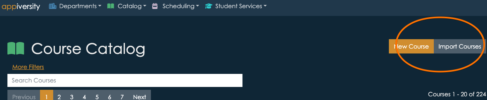
You can click that button and you’ll get to a page that contains the template
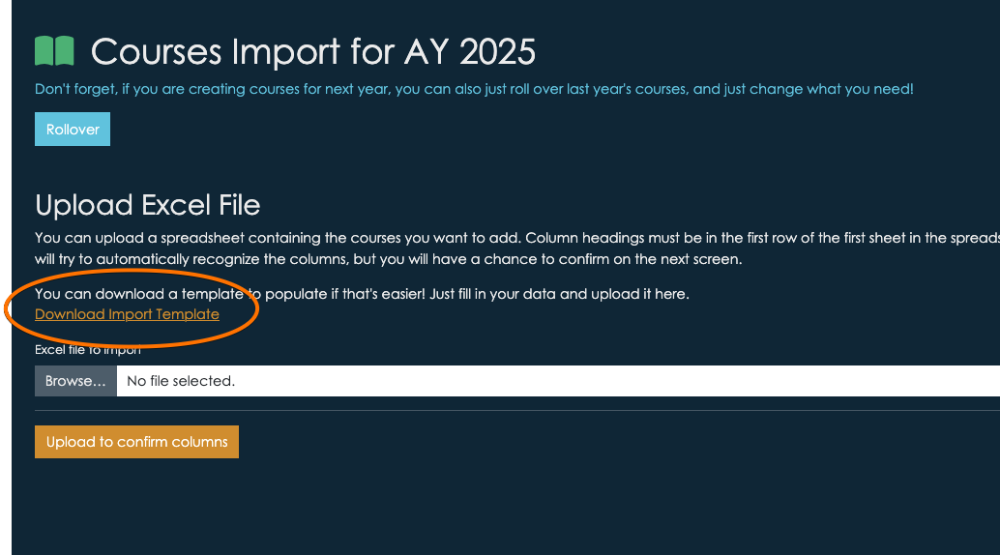
Step 2: Populate the Spreadsheet
Once you download the template, follow the instructions within it. We’ve named some commonly used columns. You can change them, or use your own spreadsheet if you already have your data. If you use your own column headers, just keep in mind that we only import data fields appiversity supports. It’s perfectly fine to have extra columns in your spreadsheet - but we won’t import anything we can’t use.
Step 3: Upload and Verify Data
Return to the Import Data page, and upload your file.
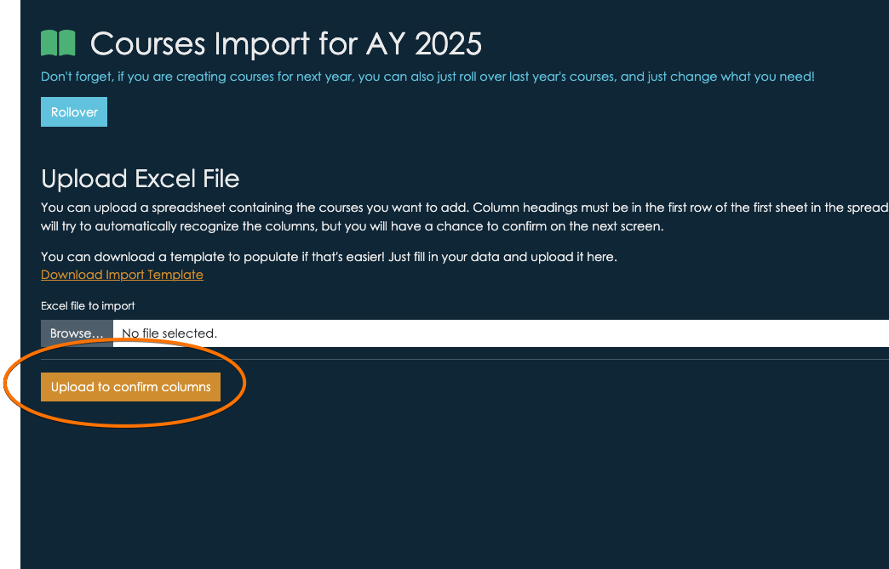
We’ll do our best to detect how each column in your spreadsheet should be used. You’ll be able to preview column usage and change what we’ve recommended too.
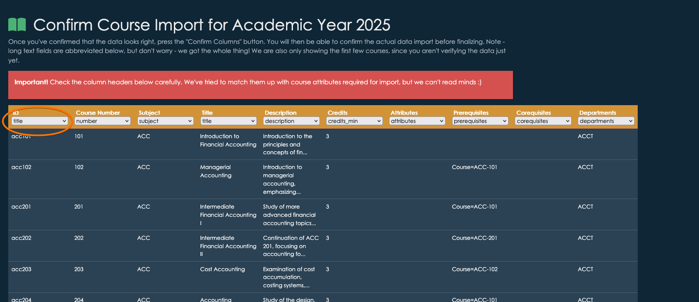
Just access the drop downs in each column header to change the way we should import your data. You can also just choose -omit- if the column doesn’t match anything we support.
Once you confirm the columns, you’ll see a complete preview of all the data you are about to import. If there’s any problem with a record, we’ll indicate it, and it will be omitted from the import. You can always import the rare issues manually - we like to be as careful and safe as possible with anything done in bulk.
Once you’ve reviewed, click the “Import” button at the bottom of the screen!
What’s Next?
We are continuously improving our data integration capabilities. Stay tuned for API access, which will provide even more flexibility in managing your institutional data.
For assistance or questions, please contact support@appiversity.com.
Exporting Data: CSV, JSON, and Excel Formats
appiversity allows you to easily export various types of data, such as courses, degrees, programs, attributes, people, departments, roles, and workflows. On any listing page, you’ll see export buttons at the bottom of the list, which give you the option to export data in three formats: CSV, JSON, and Excel.
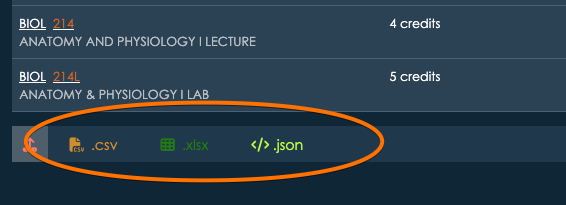
What Are CSV, JSON, and Excel Formats?
-
CSV (Comma-Separated Values)
- Definition: CSV is a plain text format where each row of data is represented by a line, and the fields within each row are separated by commas. It is a simple format that works well for tabular data.
- Use: CSV is useful when you want to quickly view or analyze data in a basic table format. It can be easily imported into spreadsheet tools (e.g., Microsoft Excel or Google Sheets) or used by databases for quick processing.
-
JSON (JavaScript Object Notation)
- Definition: JSON is a text-based format that stores data as key-value pairs. It is more flexible than CSV, supporting hierarchical or nested structures, which makes it ideal for more complex data.
- Use: JSON is appropriate when you need to export more detailed or structured data that includes relationships or nested information. It is widely used for data interchange between systems and is easy to work with for developers.
-
Excel (XLSX)
- Definition: Excel is a spreadsheet format that supports more advanced features than CSV, such as data formatting, formulas, charts, and more. It is commonly used for data analysis and presentation.
- Use: Excel is helpful when you need to work with data in a more structured, visual, or analytical way. It provides a rich interface for managing and manipulating large datasets and can be used for creating reports or performing calculations directly in the file.
Full Export with JSON
Among the three formats, JSON offers the most complete export of your data. It captures a wider range of attributes and supports complex data structures, including nested or related data that can’t be represented in a simple table like CSV. If you need the most detailed export, JSON will provide a fuller picture of the data, including all the attributes associated with the records.
Export Access
The ability to export data depends on the type of account you have:
-
Kickstart Account: With a Kickstart account, you can export data related to departments, people, and roles. These exports cover core organizational data but do not include full catalog data.
-
Catalog Package: If you need to export catalog-related data, such as courses, degrees, programs, or attributes, you must have access to the Catalog Package. This package enables full access to the catalog data and all associated exports.
Integration with External Systems
When exporting data for integration with other systems, the format you choose depends on the nature of the integration:
-
JSON for Integrations You Control
- Best for: If you’re integrating with an application or system where you have control over the implementation (such as a custom backend or internal tool), JSON is the preferred format. Its structured nature makes it easy for developers to parse and use the data in a programmatic way. JSON can handle complex, hierarchical relationships, making it a powerful choice for integration when you need to transfer detailed data.
- Example: If you’re pushing data from our system into an API that your team has developed, JSON allows you to map the data easily, ensuring it matches the structure required by the receiving system.
-
CSV for Third-Party Applications
- Best for: For many third-party applications, particularly those that don’t have a custom integration setup, CSV is the most widely supported format. Most systems, from data analysis tools to CRM software, are designed to work seamlessly with CSV files, allowing for easy import and export.
- Example: If you’re sending data from our system to a tool like Google Analytics or a marketing automation platform, CSV is often the easiest format for these platforms to process without requiring additional configuration.
-
Excel for Sharing with People
- Best for: When you need to send data to people outside your organization or to others who don’t have direct access to the platform (such as stakeholders, collaborators, or departments), Excel is often the best format. It allows you to include additional formatting, provide data insights with built-in charts, and even make use of formulas for quick calculations. Excel is also more user-friendly for non-technical users.
- Example: If you’re sharing a list of courses or departmental data with someone who needs to view the information and maybe make edits or calculations, Excel provides an intuitive, familiar format.
Summary
The ability to export data in CSV, JSON, and Excel formats offers flexibility depending on your needs. Whether you’re working on internal integrations with your own applications, exporting data to third-party systems, or sharing information with others, the system provides the necessary tools to ensure smooth data exchange. JSON is ideal for structured integrations, CSV is best for broad compatibility, and Excel works well for collaborating and sharing data with those outside the system.
Embedding with iframes
appiversity provides a powerful way to share and display your institution’s data on your public website. With the ability to configure how data listings—such as course listings, program listings, departments, people, and workflows—are exposed to the public, appiversity makes it easy for you to showcase key information while maintaining control over what is made publicly accessible.
Embedding Listings on Your Institution’s Website
One of the key features appiversity offers is the ability to create snippets that can be embedded into your institution’s website. These snippets allow you to display live data—such as courses, programs, departments, or workflows—directly on your site, making it easy for prospective students, faculty, and the public to access important information.
We accomplish this through iframes, a widely-used HTML element that allows you to embed another document within the current page. Using iframes, you can display appiversity data directly on your website, without requiring your web pages to be modified every time the data is updated. When the data within appiversity is changed or updated, the embedded iframe automatically reflects these changes on your institution’s site.
Setting up Publishing
From the dashboard, you can access Publishing - which is where all of the publication settings are controlled.
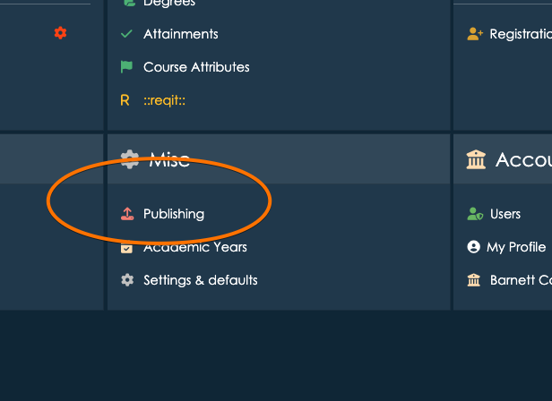
Here you can change global preferences that effect all public-facing data. This includes display preferences - like fonts and colors, along with labels (for example, if your institution calls academic departments “units”, you can specify that here). This page also includes configuration of where you will end up publishing listings. These settings help you integrate appiversity with your own institution’s web site.
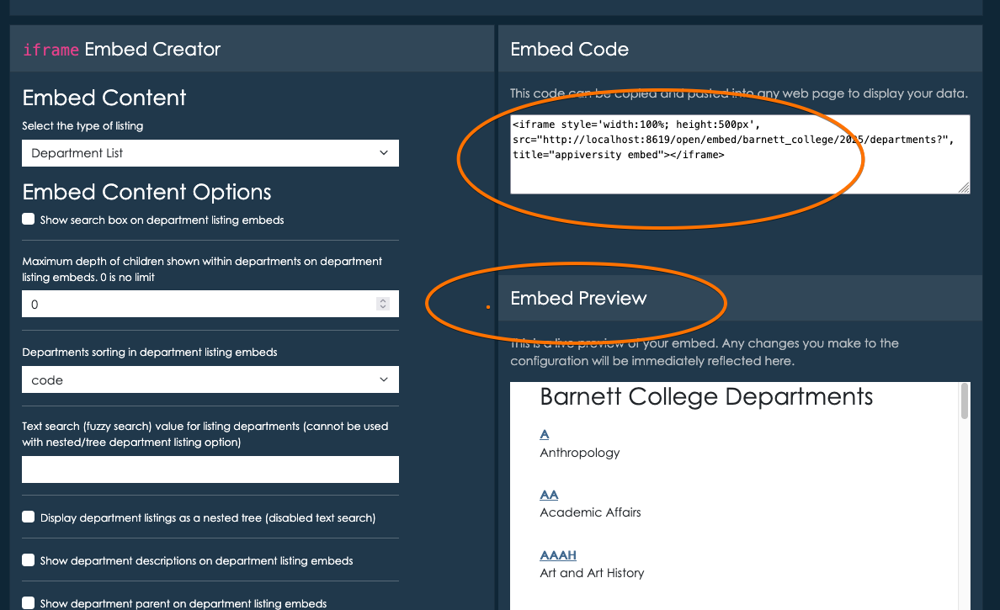
The iframe Embed creator area allows you to interactively build iframe components containing department, people, position, workflow, and catalog listings. These components can be configured to include search boxes (to allow people viewing the content to search listings), filters (to include only partial listings), and display property specifications (which properties about which records you show to public users). All the configuration is done interactively, and you can take the iframe code snippet at add it anywhere on your institution’s web page to embed live appiversity data.
Working with Iframes
An iframe (inline frame) is an HTML element used to embed one HTML document within another. For example, instead of linking to a separate page or document, an iframe lets you display the external content directly within your web page. In the context of appiversity, we use iframes to embed live data listings like course catalogs or departmental listings.
Benefits of Using Iframes:
- Easy embedding: Iframes allow you to quickly add data to your website without needing to redesign or overhaul your site’s structure.
- Live updates: When you update data in appiversity, the iframe automatically reflects those changes on your site, ensuring your listings are always up-to-date.
- Separation of concerns: Iframes provide a way to separate the presentation of external data from the core content of your web page, making it easier to manage.
Technical Considerations:
While iframes are generally easy to use, there are a few technical considerations you and your IT team will need to be aware of to ensure everything works smoothly:
-
Cross-Domain Issues: Iframes often encounter restrictions when embedding content from a different domain (cross-origin requests). To overcome this, we will work with your IT team to ensure the necessary CORS (Cross-Origin Resource Sharing) headers are configured on your web server, allowing the iframe content to be displayed properly.
-
Responsive Design: If your website is responsive (i.e., it adjusts based on the device’s screen size), you may need to adjust the iframe’s dimensions or use responsive iframe embedding techniques to ensure it looks good on all devices (desktops, tablets, mobile phones). Our team can help with this setup to make sure the embedded data appears correctly across various screen sizes.
-
Security Considerations: Iframes introduce some security concerns, particularly with embedding third-party content. We will ensure that the iframe content served from appiversity is secure and follows best practices, such as using HTTPS, to avoid issues related to mixed content warnings in modern browsers.
-
SEO and Accessibility: Since iframes are embedded content, they don’t contribute directly to your website’s SEO ranking. However, with proper usage, you can ensure that embedded data is still accessible to search engines and users. If necessary, we can work with your web development team to optimize iframe content for accessibility and search engine indexing.
Collaborating with Your IT Team
We understand that integrating iframes into your website may require some coordination with your IT department. Our team is available to support you through the process, ensuring the embedding process works smoothly with your institution’s web architecture. From configuring CORS headers to troubleshooting potential conflicts, we’re here to help your IT team make the necessary adjustments for a successful iframe implementation.
Conclusion
With appiversity, you can easily configure how your institution’s data is exposed to the public, allowing you to share dynamic, up-to-date information via embedded iframes. This integration enables seamless sharing of course listings, programs, departments, and workflows on your institution’s website, with minimal effort required to keep everything current. If you need assistance with the technical setup, our team will work closely with your IT department to ensure smooth integration and address any technical challenges.
Account Management
This section provides important information about managing your appiversity account, including account upgrades, the role of the Representative of Record, data privacy, private hosting options, and support services.
Account Management
You have full control over your account, including the ability to upgrade, suspend, or delete it. Paid plans include options for account suspension and reactivation within a set retention period. See Upgrading and Cancellation/Suspension.
Representative of Record
Each institution must designate a Representative of Record, who is responsible for account validation, billing communications, and managing institutional data. This individual is verified by Appiversity and can appoint additional representatives as needed.
Data Privacy
We prioritize the security of your data. Account holders own their data, and we do not sell or share it. Our multi-tenant cloud application ensures strict access controls, with private hosting options available for additional data isolation. See more in our Data Privacy Policy
Private Hosting
For institutions requiring dedicated infrastructure, private hosting provides an isolated environment with dedicated servers and databases. This ensures exclusive resource allocation and enhanced security. You can learn more here
Support
All account holders, whether on free or paid plans, receive full support from our team. There are no chatbots—only live support professionals available to assist you. Custom solutions and integrations for institutions are available under separate agreements, but standard support remains free for all users. Learn more here
For more details on each topic, please refer to the respective sections in this document or contact support@appiversity.com.
Account Upgrade
Users can access the Account Upgrade page by navigating to their Account page from the dashboard. Please note that only users with Account or Representative of Record privileges will have access to this page.
Viewing Your Current Packages
On this page, you will see a list of packages your account currently has access to. This allows you to review your current plan and explore available upgrades.
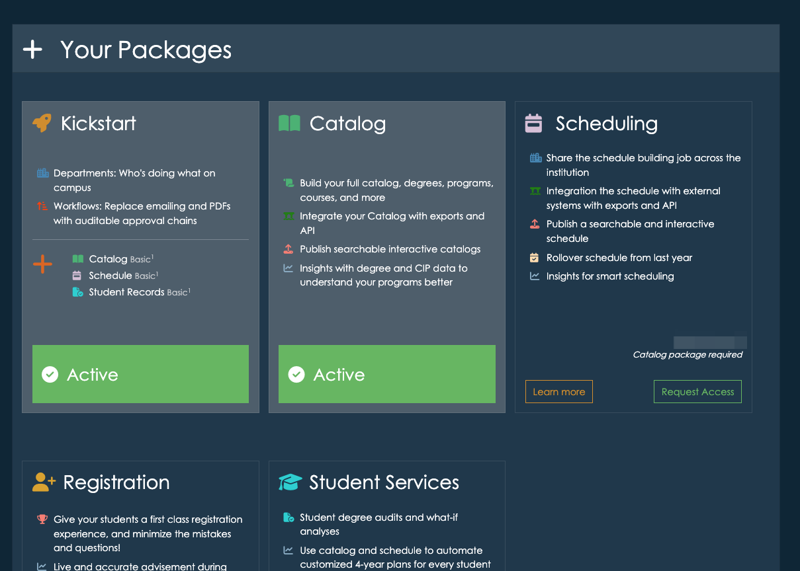
Requesting an Upgrade
If you would like to upgrade your account by adding new packages—such as Catalog—you can submit a request directly from this page. Once we receive your request, we will contact your institution’s Representative of Record to confirm the upgrade and begin the process.
Processing Time
After receiving confirmation from your institution’s Representative of Record, we will start adding the requested package right away. Most upgrades are completed within 1-2 business days.
For any questions regarding upgrades, please contact us at support@appiversity.com.
Representative of Record
Effective Date: July , 2024
Overview
The Representative of Record is a designated member of your institution who serves as the primary point of contact for account matters. This individual plays a crucial role in validating institutional data and ensuring smooth communication between appiversity and your institution.
Responsibilities
- Validation of Institutional Data: Ensuring that all institutional details remain accurate and up to date.
- Primary Contact: Serving as the main liaison for all communications regarding institutional verification, account management, and billing.
- Authorization: Having the authority to request or approve changes related to the institution’s account.
Verification Process
- The Representative of Record is verified by our team using publicly available sources, such as your institution’s official website. You will identify this person when you begin account verification.
- Once verified and attached to your account, the Representative of Record can appoint additional representatives to assist in managing the institution’s account.
Role in Account Management
- When making significant changes to your account—especially related to upgrades, billing, suspension, or cancellation—we will work directly with one of these representatives as the primary point of contact.
- This ensures that all changes are authorized by an institutionally verified representative, maintaining security and consistency in account management.
Requirements
- At least one user from each institution must hold the Representative of Record privilege.
- This individual is identified through our verification process, which is outlined in Verification.
- Institutions may designate additional representatives as needed.
For any questions or to update your institution’s Representative of Record, please contact us at support@appiversity.com.
Data Privacy
Effective Date: July, 2024
We take your privacy seriously. This policy explains how we handle your data when you use our multi-tenant cloud application. Our goal is to protect your information while providing a secure and reliable service.
Data Ownership
You own your data. As an account holder, any academic data you store within our application remains your property. We do not claim ownership, nor do we sell, share, or monetize your data in any way.
How We Store Your Data
Our application operates in a multi-tenant environment, which means your data is stored in a shared database along with data from other account holders. However, strict security measures ensure that you can only access your own data. Each account is securely isolated using access controls and encryption.
If you require a dedicated database for additional security and compliance, we offer private hosting plans. Contact us for more details.
Data Security
We implement industry-standard security practices to safeguard your data, including:
- Encryption in transit and at rest.
- Role-based access controls to restrict unauthorized access.
- Regular security audits and updates.
Data Access and Control
You can access, modify, or delete your data at any time using your account controls. If you need assistance or wish to close your account, contact our support team.
Third-Party Access
We do not sell or share your data with third parties. However, we may use trusted third-party service providers for infrastructure and security purposes. These providers are contractually bound to maintain data confidentiality and security.
Compliance and Legal Requirements
We comply with applicable data protection laws and regulations. If required by law, we may disclose your data to authorities, but only after verifying the legal request.
Changes to This Policy
We may update this policy to reflect improvements in security and compliance. If changes are made, we will notify account holders in advance.
Contact Us
If you have any questions about this policy or how we protect your data, please contact us at: support@appiversity.com
Private Hosting
Effective Date: February, 2025
Overview
For institutions that require dedicated resources, we offer private hosting plans. These plans provide a fully isolated hosting environment tailored to the needs of each institution while maintaining the reliability and support of our cloud-based platform.
Custom Domain and IT Collaboration
Private hosting plans are hosted on appiversity’s secure infrastructure but are configured with a domain name associated with your institution, such as appiversity.your-college.edu. Our team will work closely with your institution’s IT department to establish the necessary DNS and routing records to ensure seamless integration with your existing systems.
Dedicated and Isolated Infrastructure
Unlike our standard multi-tenant environment, private hosting ensures that all of your institution’s data is stored in an entirely separate and isolated database. This means:
- Your database is completely independent, with no cross-tenant data exposure.
- You have direct access to your database, allowing for advanced query management and custom analytics.
- Dedicated application servers run your instance of the application, ensuring that performance is unaffected by other institutions.
Performance and Resource Allocation
With private hosting, your institution benefits from dedicated resources:
- Web Traffic Isolation: Your web traffic remains exclusive to your institution’s users, ensuring consistent performance.
- Dedicated CPU and Memory: Your application runs on a dedicated set of hardware, eliminating resource contention from other institutions.
- Disk Space Management: Storage resources are allocated based on your institution’s needs, preventing unexpected slowdowns due to shared disk usage.
Security and Compliance
Private hosting enhances security measures beyond our multi-tenant setup:
- Data Encryption: All data is encrypted at rest and in transit.
- Access Control: Only authorized personnel within your institution will have access to your database and server resources.
- Regular Security Audits: We perform ongoing security checks to ensure compliance with industry best practices.
Pricing and Contract Terms
Private hosting is available with a one-time setup fee and an annual contract. Pricing is determined based on your institution’s expected usage, including:
- Database size and storage requirements.
- Expected web traffic and application load.
- Custom integration or additional support needs.
To receive a tailored quote and discuss how private hosting can benefit your institution, please contact our team.
Contact Us
For more details on our private hosting plans and to initiate setup, please reach out to us at: support@appiversity.com
Suspending and Cancelling your account
Effective Date: July 2024
Cancelling Your Account
You may cancel your account at any time by contacting our support team at support@appiversity.com. The process and data retention policies vary depending on your plan type.
Kickstart Plan Cancellation
For users on our Kickstart plan:
- Once we receive your cancellation request, your data will be permanently erased from our servers immediately.
- Your account will be completely deleted with no option for recovery.
Paid Plan Cancellation and Suspension
For users on a paid plan:
- You may request either account suspension or account deletion.
- Suspended accounts become inaccessible through our normal web application but remain stored for up to 12 months without payment.
- After 12 months of suspension without renewal, the account and all associated data will be permanently deleted.
- Deleted accounts are removed from our servers immediately, after confirmation with our account team and your institution. We will provide data back ups to you for your use in the future.
Requesting Deletion or Suspension
- Paid account holders must submit their deletion or suspension requests through their designated Representative of Record.
- We will begin processing all suspension and deletion requests within one week of receipt.
Data Retention and Backups
- While account data is deleted from active servers, data stored in backups will remain available per our internal backup retention policy.
- Backup data is not accessible to account holders but is retained for security and compliance purposes.
For further questions regarding account cancellation or suspension, please contact support@appiversity.com.
Support
Contacting Support
For all support inquiries, please contact us at support@appiversity.com. Our team is available to assist all account holders, whether on free or paid plans. We believe in providing direct, high-quality support—there are no chatbots; you will always be connected with live support that knows your institution.
Support for All Account Holders
Regardless of your plan type, every user has access to full support from our expert team. Our goal is to ensure a smooth experience for all users, and we are committed to resolving any issues as quickly as possible.
Custom Solutions for Institutions
In addition to our standard support services, we offer custom solutions for institutions through separately contracted agreements. These custom solutions may include:
- Integrations with existing institutional systems.
- Custom features for private hosting accounts.
- Additional dedicated servers for enhanced performance and scalability.
These services are available as part of tailored agreements with institutions. However, please note that regardless of whether your institution opts for custom solutions, our standard support remains free for all users.
For more information on our custom solutions, or to discuss a specialized service agreement, please contact us at support@appiversity.com.